From first idea
to a directed sequence.
A practical guide to planning, refinement, effects, local generation and production handoff.
Try the scope controls
This guide-only example shows which authored beats a refinement targets.
Your complete guide to Director
From visual idea to production-ready plan
Start with an image, a video clip or a written beat. Arrange the sequence, describe the motion you want, and turn the plan into a prompt you can shape. Director keeps the timing, media and words together as your idea develops.
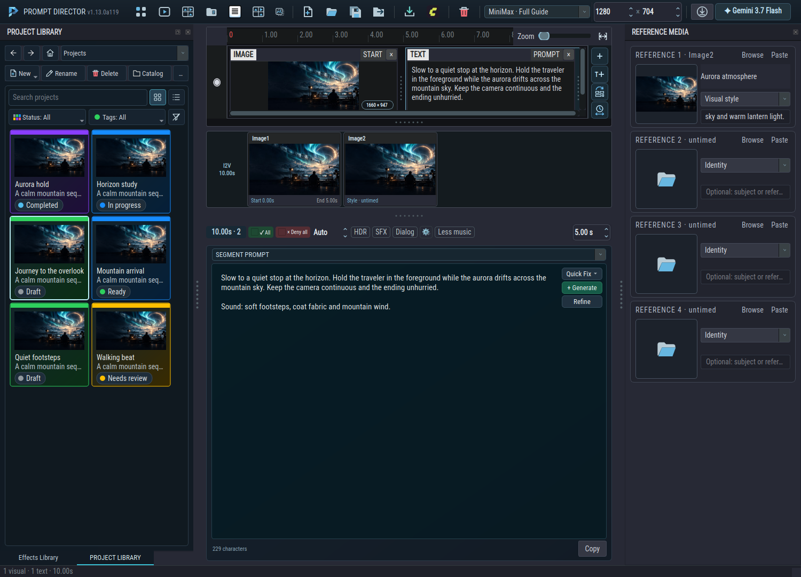
The examples use locally authored demonstration projects. Open Help for the searchable offline manual and guided setup.
Refine an existing MiniMax prompt
Choose MiniMax · Prompt Refinement · Annotations Only for a prompt-only workspace. Paste your text, use / to insert editable refinement and constraint notes, and choose Refine. The model receives only that text and its annotations. You can save the draft as a project and copy the result without creating timeline segments or importing media.
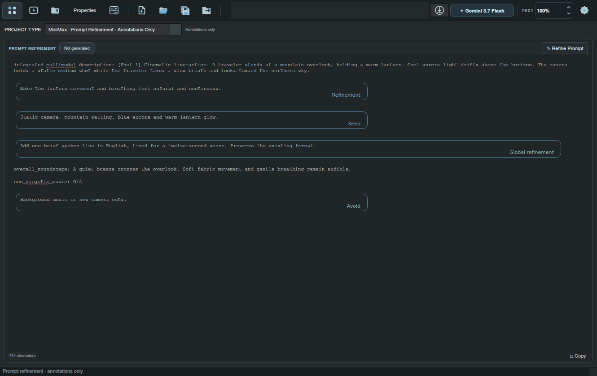
Take your MiniMax plan into ComfyUI
Add up to four mixed references through Reference media. Video samples offer Use ref audio only, and standalone audio files are supported. Choose the branded Export ComfyUI action to create the graph from the supplied base workflow and copy its full-resolution media to the configured ComfyUI input folder. Opening media and later conditioning frames are connected using the timeline’s cumulative checkpoint values.
Your first sequence
- Open Help → Setup wizard to choose Gemini, ChatGPT, OpenAI API or a local writing model. You can edit and organize projects before configuring AI.
- Choose LTX Video, MiniMax Standard / Keyframes or MiniMax Full Reference from Project type.
- Use Add media or drop supported images, MP4 or WebM clips onto the timeline. Use Add text for a beat described in words.
- Arrange the segments and set their durations. Choose Global scope, describe the sequence, and choose a total length or Auto.
- Use Generate in Global scope to develop all segment prompts. Choose Segment to work on one beat, or Unified to generate or refine the production draft independently.
- Use Save to Library to name and retain the project. Copy the MiniMax brief or use Export for LTX timeline JSON.
AI generation is an explicit action. Switching workspaces and adding media let you prepare the plan before submitting a request.
Queue renders and keep your panels close
Local video, local artwork and cloud image requests share the Render Queue on the right icon rail. Render jobs run in order; pause waiting jobs or cancel an individual request. Project thumbnails show a spinner and Waiting or Rendering badge, with distinct local-chip and cloud icons. The project's saved status color stays unchanged.
Click a panel's icon to open it; click again or use its heading arrow to collapse the column. Drag panel headings to rearrange supported docks. Read the illustrated queue and panel guide.
Every creative tool, at a glance
| Tool | What it helps you do | How to use it |
|---|---|---|
| Image segments | Establish visual checkpoints | Add or drop PNG, JPEG, WebP or GIF media |
| Video segments | Bring source motion into the plan | Add or drop MP4 or WebM clips |
| Text segments | Plan action before a reference exists | Click Add text, then write the beat in the editor |
| Drag reordering | Change the sequence’s progression | Drag a timeline card to its new position |
| Segment duration | Give each action the time it needs | Drag the resize edge or edit the Duration control |
| Frame roles | Identify where an image anchors a beat | Select Start frame or End frame where the workspace supports it |
| Timeline scale | Inspect details or the whole sequence | Use Scale or Auto fit; the far-left scale setting fits the sequence |
| Preview height | Make references easier to see | Drag the dotted grip below the timeline |
| Start-time and resolution labels | Check placement and source size | Read the labels on image and video cards |
| Media replacement | Update a reference while retaining its beat | Use Replace media or Ctrl+drop onto a card |
| Image clipboard tools | Reuse or swap original images | Right-click an image: Copy image or Paste image to replace |
| Text-to-image conversion | Turn a written beat into a visual one | Right-click a text card and choose Convert to image segment |
| Director’s Intent | Set the creative throughline | Describe action, camera, continuity and mood in the shared panel |
| Total length | Guide sequence pacing | Enter a target duration or choose Auto |
| SFX | Request environmental and action sounds | Enable SFX before generation or refinement |
| Spoken Dialog | Guide a speaking performance | Enable Spoken Dialog and set language and accent |
| HDR | Add quality direction | Enable HDR; it adds prompt guidance, rather than changing the source media |
| Reduce Music | Favor scene-specific ambience | Enable Reduce Music for ambient-sound direction |
| Magic Build | Develop the entire LTX plan | Generate segment prompts and global direction from the ordered timeline |
| LTX global prompt | Establish shared continuity | Select Unified to edit the shared LTX production prompt; Global edits Director’s Intent |
| Refine Prompt | Improve wording and pacing | Segment changes only the selected beat; Global acts on the sequence and rebuilds the combined prompt |
| Refine Timing | Adjust a beat’s duration | Select the segment and choose Refine Timing; inspect its updated duration |
| Inline notes | Keep edit requests near their subject | Type /, choose a note and press Tab |
| Spelling suggestions | Polish prose as you work | Right-click an underlined word when a system dictionary is available |
| Shared segment editor | Edit and retime individual beats | Select a card in LTX or MiniMax; the unified draft stays independent |
| Timed prompt paste | Reshape the timeline from a written plan | Paste contiguous 24 fps SMPTE ranges into the unified editor |
| Two reference slots | Guide untimed visual attributes | Drop, browse or paste images; choose roles and enter notes |
| Independent drafts | Explore different prompting approaches | Switch between LTX and MiniMax; each workspace retains its own prompt draft |
| Prompt copy | Send the visible text into your workflow | Use the editor’s Copy button |
| Project library | Keep an accessible portfolio of plans | Save to Library, then open Projects |
| Collections | Group related creative work | Set a collection in project details or Properties |
| Search and sorting | Find or arrange saved projects | Search names/descriptions; sort A–Z, Z–A or Custom |
| Status, tags and archive | Track progress visually | Set one status, add multiple tags and archive finished work |
| Tasks and dated notes | Keep next steps with the project | Add, edit, complete or delete notes in Properties |
| Custom project covers | Recognize work at a glance | Choose a segment thumbnail or upload a cover in project details |
| Multiple open projects | Move between active ideas | Switch saved projects while retaining in-memory edits |
| Portable project archive | Carry the editable plan and media | Choose Export Project for a .LTXD file |
| Project video preview | Review the rendered result | Open Preview and add or drop a rendered video |
| Playback and fullscreen | Inspect pacing and detail | Play/pause, click the seek bar or choose Fullscreen |
| Frame capture | Reuse a moment from the render | Right-click the video to export or copy the current frame |
| Project Files | Retain the rendering setup | Add or drop workflow JSON, then export or remove attachments as needed |
| LTX timeline JSON | Hand off the planned sequence | Choose Export in the LTX workspace |
| Download folders | Keep each project’s output together | Set a project folder in Properties or an application default in Settings |
| Recent exports | Find and move finished files | Click the download button, open a file or drag it to another app |
| Custom workspaces | Fit the editor to your process | Open Settings → Workspaces and edit or create a definition |
| Generic engine | Use your own prompting instructions | Choose Generic and a unified or segmented layout |
| Workspace import/export | Reuse a preferred setup | Import or export a workspace definition |
| Dockable panels | Arrange your working space | Move, resize, hide or float supported docks |
| Text scaling | Make the interface comfortable | Set toolbar text scale from 75% to 200% |
| Request controls | Manage provider delays | Configure timeout, retries and cooldown in Settings |
Learn each workflow
Follow the illustrated guides for practical examples:
- Timeline and media: build, rearrange, resize and update every beat.
- Prompt workflows: choose MiniMax, LTX or a custom editor and develop the sequence.
- Refinement and audio direction: edit with intent, preserve key details and guide sound or dialogue.
- MiniMax references: assign visual roles and combine text, frames and source video.
- Projects and organization: manage your gallery, collections, labels, notes and portable projects.
- Video review and project files: inspect renders, capture frames and retain workflows.
- Exports and custom workspaces: hand off your plan and personalize the editor.
- Installation and setup: install the current build, configure providers and create a desktop launcher.
A working rhythm you can make your own
Build the visual order first, then describe what changes between the checkpoints. Generate a draft, read it alongside the timeline and refine the moments that need attention. Bring the rendered video back to the project, capture a useful frame and use it to plan the next pass. Save the project before finishing the session; use a portable export when you want to carry the work elsewhere.
Global media catalog
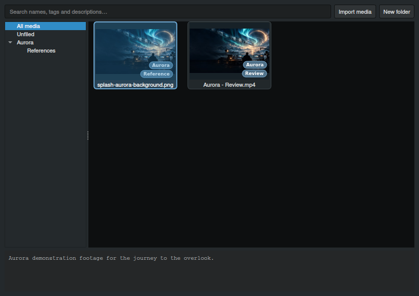
Open Media Catalog from the top toolbar. Dock it beside the timeline or float it on another display. Your image and video collection is available across every project.
Import files or drop files and folders from your file manager. Browse large preview tiles, select several with Ctrl/Shift, and search names, tags, or descriptions. Right-click a selection to edit its tags and short description, move it into a catalog folder, or add it to the timeline. Create folders with New folder; select a folder first to create a subfolder. Drag tiles onto a folder to organize them, onto the timeline to insert them, or into a file manager using native file URLs.
Imports copy full-resolution images and videos into Prompt Director’s working folder. Catalog tiles and timeline drags use these managed copies, so moving or deleting the original source does not break your imported media. Same-named files remain separate. Removing a catalog entry or folder keeps the media on disk.
The app ships with LTX Video, MiniMax Standard / Keyframes and MiniMax Full Reference. The guide-based MiniMax templates replace the old MiniMax default. Two additional Official Skill workflows provide Standard / Keyframes and Full Reference versions adapted from the supplied prompt-writing skill files. LTX generation and refinement return video prompts and timing without requiring a separate still-image prompt. The prompt panel header switches between Segment Prompt, Global Prompt and Unified Prompt while preserving their separate drafts. Compact actions sit inside the panel. The timing overview retains its own resize and hide/reopen handle. Panels shrink within the window and prompt text scrolls within its editor.
Media tags appear as pills on each thumbnail, matching the project cards. Press F2 to rename a selected tile directly below its image; Enter saves and Escape cancels. Press Delete to remove selected catalog entries after confirmation. The managed media files remain available on disk.
The reference-image panel remembers whether you opened or closed it across workspaces and restarts. Reopen it with Reference images. The project library retains its chosen dock size when changing workspaces or dock tabs. Media Catalog and video preview use the same blue border as the timeline while accepting a drop.
Double-click a catalog tile, or choose View media from its context menu, to open the lightbox. Browse the current folder and search results with Previous, Next, or the arrow keys; press Esc to close. Images fit the viewer while retaining their original resolution for clipboard copy and export. Right-click an image for those actions. Videos use the project preview controls: play/pause, click-to-seek, fullscreen, video export, and right-click frame export or copy. Closing the viewer stops playback.
Reference images have Export Image and Clear in their context menu. Drag an image out to the filesystem or timeline, and drop a still image into a slot to replace it. Reference images, project tiles, and catalog tiles highlight on hover.
Recent exports show small image and video previews. Use the broom button to clear the history while keeping your exported files. The panel stays open when you switch to another application, making file drags easier; clicking elsewhere in Prompt Director closes it.
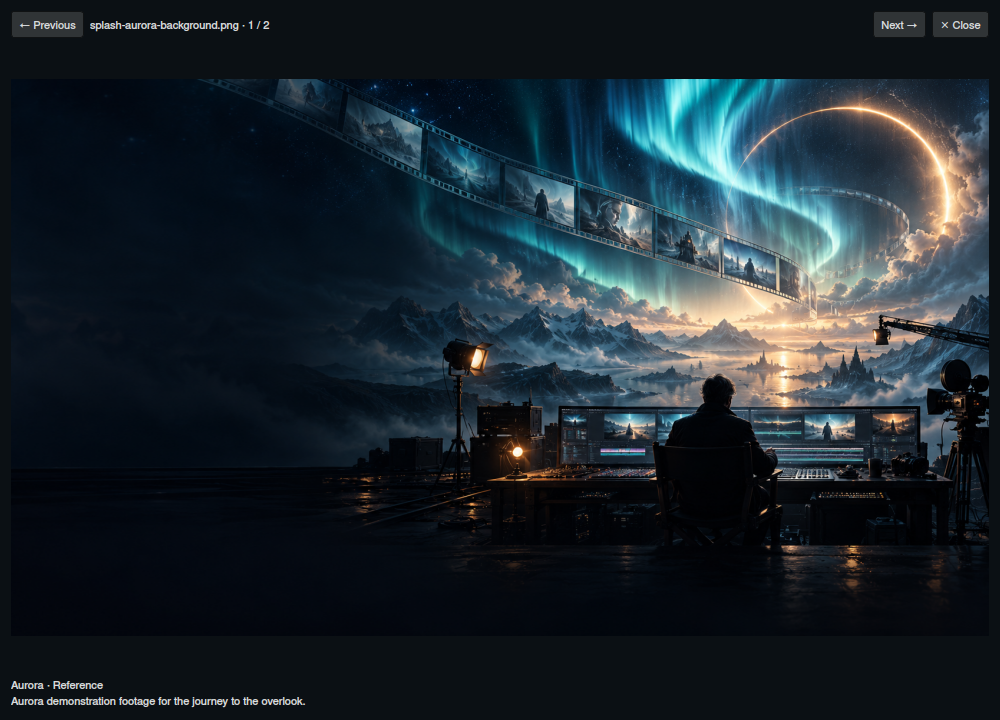
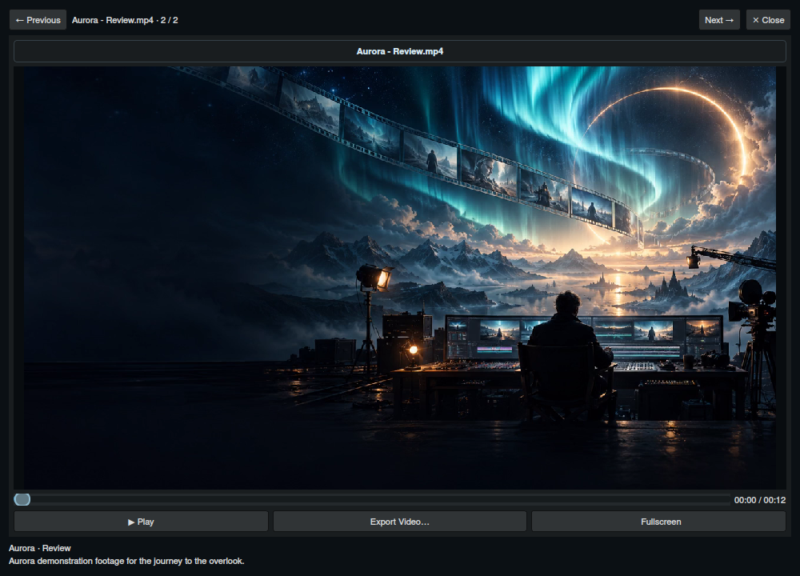
Global timing instructions such as /refine-global Resize the segments proportionally to 15 seconds work through Global → Refine in LTX and MiniMax. Segment refinement can resize the selected card. Segment refinement stays on that beat. Global refinement acts on the full sequence and rebuilds the unified production prompt. Ordinary manual segment edits keep the existing unified draft until generation is requested. The compact MiniMax conditioning strip shows frame times, source trims and setup fixes; unified text edits never retime the timeline.
Workspace sequence limits
In Settings → Workspaces, set Maximum sequence length or select No limit. The limit covers the whole timeline: LTX defaults to 20 seconds and MiniMax to 15 seconds. Dragging or editing a duration stops at the remaining sequence budget. After refinement or Magic Build, Director shortens the final segment first; if that cannot fit the plan, all durations scale proportionally. Media and segment order remain intact. Imported plans and workspace changes use the same budget.
The ComfyUI export puts the production prompt in a tall group along the left edge, with the remaining groups packed beside it.
Completed shot sequences
Each collection includes a Shot Sequence tile. Drop finished movies onto its thumbnail NLA timeline at the blue insertion marker and reorder them. Select a shot to set its blend, overlap and overlap side using the existing top controls. New shots copy a neighbor’s settings; each shot then keeps its own settings independently. Drag either edge of a video or audio strip to trim both together. Split at playhead creates two adjoining pieces; their source media stays intact. Its context menu also offers shot status, export and Delete. Segment export uses the trimmed interval and copies the original video/audio codecs; stream-copy cuts can follow source keyframes. Use Left/Right on the timeline or player to step back/forward one frame. The assembled preview updates automatically in background workers, with source audio and a scrubhead linked to the player. Green regions are cached; red regions are rebuilding. Workfiles persist in the per-user cache so unchanged clips and joins can be reused. The default join is a 1-second source-side perceptual crossfade. Bake WebM writes the full-resolution sequence with audio and configurable CRF (default 15). Read the illustrated guide.
Storage, backups and reset
Open Settings → Storage and backups to see cache disk usage and remaining free disk space. Clear unused cache removes disposable workfiles while retaining media used by open projects. Preview workfiles rebuild when needed.
Export complete setup saves open projects and ZIPs the full configuration and project-data folders, including preferences, stored API keys, custom workspaces, collections, projects, catalog entries and managed media. Cache files are excluded. Import complete setup validates the ZIP and prepares it for the next launch. Close and reopen Prompt Director to apply it. Managed paths are updated for the destination computer; files outside the configuration and project-data folders remain external.
Reset settings asks for confirmation before preparing a reset for the next launch. It restores application preferences and workspace definitions to defaults, removes stored API keys, and retains projects, collections and managed media.
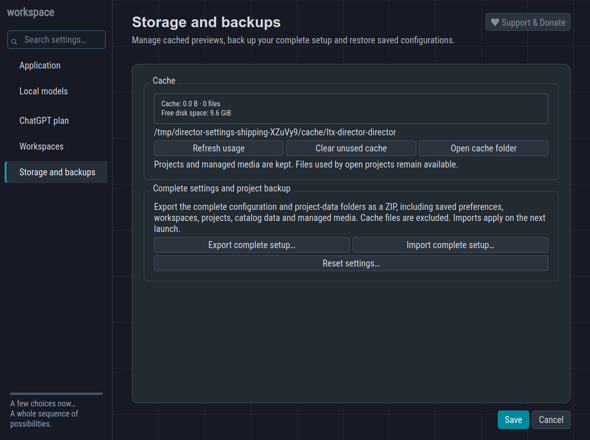
Setup, local generation and interactive help
Use Help → Setup wizard to choose writing and image sources, configure local H3 and Flux models, and learn the core workflow. Help → Interactive illustrated manual opens the complete offline guide with search, chapter navigation and a guided tour. Read the illustrated local generation guide.
Make images and video locally
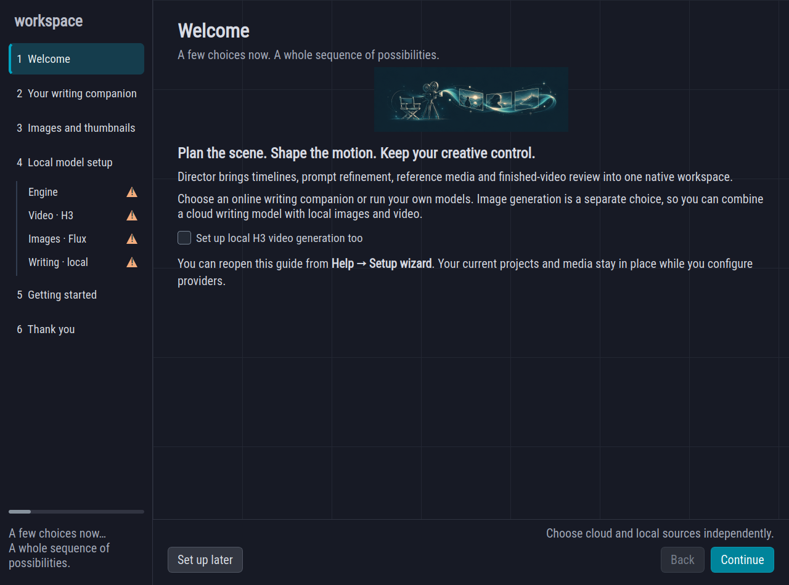
Open Help → Setup wizard for a guided start, or Settings → Local models to change an existing setup. A new installation opens the guide automatically. Writing, images and video have separate sources: you can use Gemini to refine prompts while Flux makes artwork and H3 renders video on your computer.
Find settings
Settings uses one searchable sidebar for Application, Local models, ChatGPT plan, Workspaces, and Storage and backups. Search by a setting name, such as seed, LoRA, or backup, to open its section. Clearing search restores the full sidebar and keeps your edits.
Local models expands into Engine, Video · H3, Images · Flux, and Writing · local. Hover the readiness icon for details: a green file section means its files are configured; a green Engine icon follows an explicit successful Check engine or Prepare local engine operation. Opening Settings does not start a generation or engine check. Long pages scroll inside the content card, while Save and Cancel stay below it. Support & Donate will become available when its link is provided.
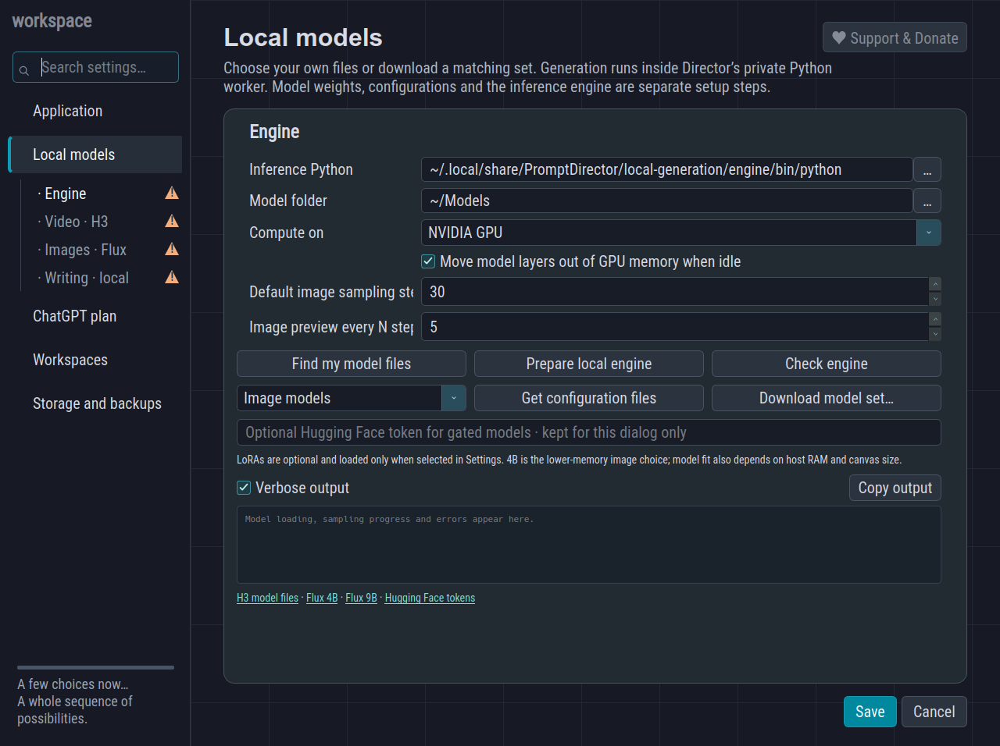
Choose a writing companion
Gemini is the recommended starting point when its free text tier suits your account and region. Open Google AI Studio, sign in, choose or create a project and create an API key. Paste it into the wizard, choose an available text model and review current model limits and pricing.
ChatGPT account uses the existing browser sign-in controls. Continue with ChatGPT, grant eligible plan usage and select an available model. An account must be eligible for this integration, and its plan limits apply. See the official sign-in guide.
OpenAI API uses a key from your OpenAI project. Configure API billing and choose a model your account can access. API usage is separate from ChatGPT subscription usage. It is a useful option for detailed reasoning and structured edits; compare actual results on your own prompts.
Local instruction model uses a complete Transformers model folder with configuration, tokenizer and safetensors weights. Choose a folder you already have or download a Qwen instruction model. The file scan suggests a model size from detected VRAM; you can choose a different size or repository. Local writing has no API token charges, and its speed, memory requirements, context window and license depend on the selected model. The local writer uses authored prompt and timeline text; it does not analyze video or pretend to see images. Image-model Qwen encoders are kept separate from the writing-model chooser.
Use Remember API keys on this device only when you want keys stored in the app settings. With this option off, API keys last for the current session. Do not paste keys into prompts or projects. ChatGPT account credentials use the existing account connection controls.
Choose an image source
The wizard defaults to Gemini Flash Lite Image. This is an image-generation model, separate from Gemini's similarly named text model. Gemini image API output requires a paid tier; a free text allowance does not supply free image output. Choose another image model or Local · Flux 2 Klein if that fits your workflow.
The default image source is used for segment artwork, image edits and Add your own effect → Generate thumbnail. The supplied Effects Library keeps its original catalog illustrations. Selecting a specific source never silently switches to a different billed provider.
Prepare local models
The wizard’s sidebar expands Local model setup into Engine, Video · H3, Images · Flux, and Writing · local. Click a substep to open its controls. Amber icons indicate pending configuration or an unverified engine; a green Engine check means its actual dependency, import and execution checks succeeded. The file sections use green checks once their required files are configured. Hover an icon for details.
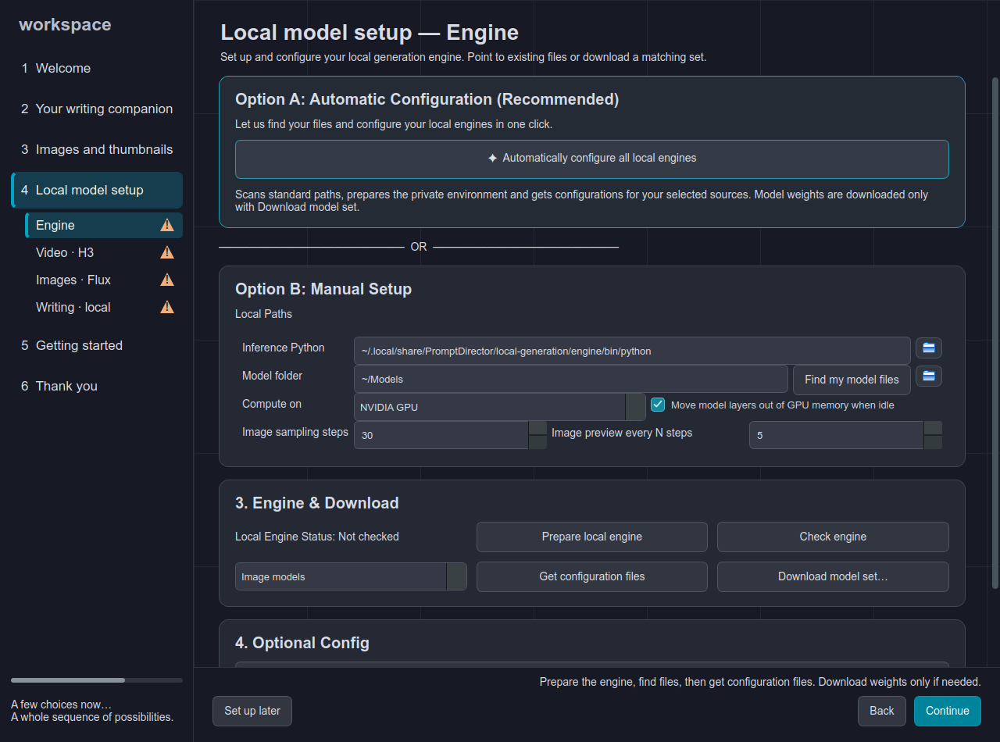
Choose Automatically configure all local engines to scan standard model folders, preserve files you already selected, prepare or repair Director’s private environment, and get configuration files for the selected or discovered video and image models. Model weights still use the separate Download model set action. Expand Optional Config for the Hugging Face token and verbose diagnostics. Cancel preparation stops the current setup operation. You can instead use every manual control below.
- Choose Prepare local engine. Director creates a private inference environment under its application data folder. The first installation downloads several GB of Python libraries and CUDA PyTorch. Its dependencies and download cache stay in the managed
local-generation/enginevenv; no separate package installation is required. It does not alter your running ComfyUI instance or require a ComfyUI server. Use Check engine to verify actual library imports, dependency consistency and CUDA execution. If preparation was interrupted, run Prepare local engine again. - Use Find my model files to scan your chosen model folder. The initial folder suggestion is
~/Programs/ComfyUI/models, but any folder is allowed. Scanning reads filenames in a background worker and leaves model files in place. - For images, choose Klein Base 4B or 9B. The scan suggests 4B on smaller GPUs and 9B when at least 20 GB VRAM is detected. This is a starting recommendation, rather than a guarantee: system RAM, canvas size and other running apps matter too. Pair 4B with its Qwen 4B encoder, or 9B with its Qwen 8B encoder, and select the Flux 2 VAE.
- For video, select a pruned H3 checkpoint, a supported H3 text encoder, video VAE and audio VAE. Choose Ref2VA for reference media, or FL2VA for text and first/last frames. The native backend accepts INT8 ConvRot and the 14 GB NVFP4/AWQ encoder. NVFP4 weights remain packed on disk and are expanded per layer for computation; older NVIDIA GPUs do not need NVFP4 tensor cores. LoRAs are optional and selected separately in Settings.
- Select Image models or Video models, then Get configuration files. This downloads tokenizer, processor and model configuration files needed alongside your weights. It does not download the model weights.
- If weights are missing, choose Download model set. Review the approximate size before downloading. Matching files already selected in the dialog are reused. Gated repositories may require accepting the model's terms on Hugging Face and entering a token in the dialog; that token is kept only for that dialog.
- Save Settings or finish the wizard. Its final page lists incomplete setup so you can return later. You can also choose Set up later and keep using the editor.
FP8 image checkpoints are expanded into a derived BF16 compatibility cache one tensor at a time. Sequential offload limits GPU residency during image inference. Original model files are untouched. This cache needs extra disk space and can make the first run longer. The local video engine uses disk offload to limit host memory pressure. Other apps keep their processes and models; free GPU memory before requesting a local render. Quantized native H3 uses an NVIDIA GPU; CPU mode is available for images and writing.
Generate a video
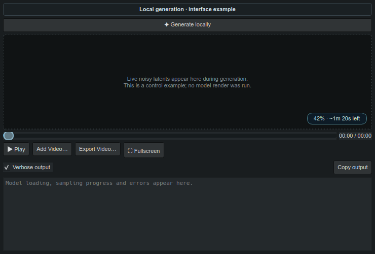
Choose Settings → Local models → Video to set the canvas, length, sampling steps, sampler and seed. The initial settings are 16:9 at 0.5 MP (960 × 544), 15 seconds, 20 steps. H3 aligns 15 seconds to 362 frames at 24 fps, producing about 15.08 seconds. Choose RES multistep with a simple schedule or the native Euler sampler. No LoRA is selected automatically. Canvas, duration, adapters and references affect memory use and render time.
In Settings, choose Random for each render for a fresh variation each time, or turn it off and enter a static seed, including a full 64-bit seed from a workflow. The generation output lists the actual seed used. Seeds make native runs repeatable with the same inputs and settings; different engines and devices can produce different results.
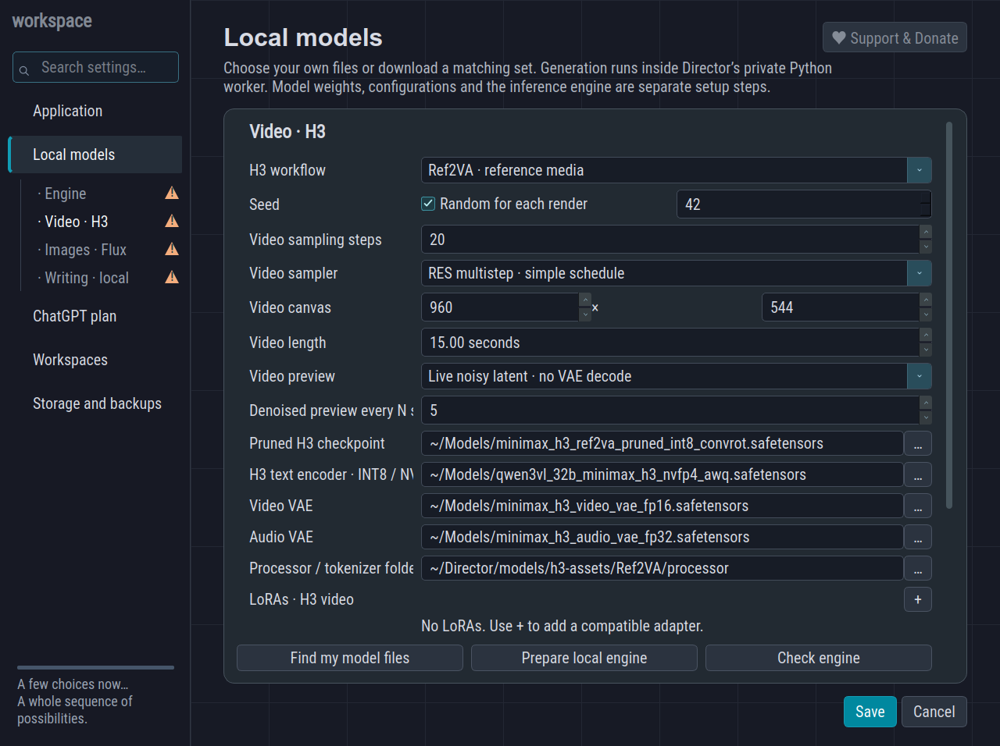
Click Video Preview → Generate locally to render the current unified production output with timeline conditioning media and the Reference media panel. Timeline images retain their Start/End checkpoint times, and timeline videos use their source trim and timeline position. They precede Reference panel inputs, matching the media numbering in the prompt. Archived originals are loaded in the background when needed. Ref2VA supports these timed guides alongside untimed references. FL2VA accepts only opening/final image keyframes; use Ref2VA for intermediate checkpoints or video guides. The verbose output lists every input and its target time. Missing sources and conditioning beyond the configured output length produce an error instead of being silently omitted. Reference videos include their paired audio when available; the audio-only option uses just the extracted sound.
Conditioning-only workspaces exclude saved Reference panel media, even if it was supplied in another workspace. MiniMax Full includes only its enabled slots and supported roles. Switching workspaces preserves saved references for later use. Timeline video guides decode the full trimmed source at H3's 24 fps cadence. Every decoded frame reaches the video encoder; clips are padded with their final frame when required by the encoder, instead of dropping their ending frames. Padding does not extend the guide's timeline placement.
Verbose output in the generation panel streams loading messages, sampling details and error tracebacks. Use Copy output to share a failure report. Credentials are redacted, and raw job requests and diagnostics are not saved to disk.
The default Live latent estimate preview updates every sampling step and animates the full clip with approximate colors. It projects the current clean-latent estimate already available from the sampler, rather than the noise-heavy sampling state. It does not load the VAE or add model passes during sampling. This remains a rough preview, with more detail developing over later steps. In Settings → Local models → Video, choose Denoised estimate to decode a full-clip clean estimate from the existing model prediction every 5 steps by default; its interval is adjustable. This optional preview pauses sampling briefly for VAE decoding. The full video and audio are decoded at the final stage. The H3 sampling network · layer messages report the required transformer layers within each sampling step; they do not indicate preview decoding. The pill at the bottom right shows sampling percentage and an estimated remaining time once measured steps are available. Loading and preparation show a stage message until an estimate is meaningful. Drafts loop through the full video duration and can be noisy; the finished video contains the final decoded frames and audio. You can pause or resume the draft in the player.
Cancel generation stops that Director worker. A completed video appears in the preview and is attached to the current saved project. For an unsaved project, the generated file remains in the local generation folder and can be exported through the player. Switching projects while a job runs prevents its result from replacing the new project's preview; its output remains available in the generation folder.
Generate artwork and effect thumbnails
Choose Local · Flux 2 Klein as the default image source. Use a segment's Generate Artwork or Render requested artwork action. The Image generation panel shows draft images, sampling percentage and estimated time. Flux 4B and 9B use the main toolbar’s Output resolution for their canvas, rounded to the nearest supported 16-pixel size (ties use the smaller size). For example, 1280 × 704 renders at exactly that size instead of a square. This also applies to locally generated Effects thumbnails. Draft previews decode the clean-image estimate from the current sampler prediction at the interval in Settings (every five steps by default). They can change as sampling advances, but do not decode the noise-heavy sampling state. This applies to both model sizes, artwork refinement and Effects thumbnails. Previewing adds no extra model pass; the finished image is decoded once at the end. Final artwork follows the existing segment review workflow; source media is retained.
In Effects Library → Add your own, write the effect instruction and choose Generate thumbnail. The dialog uses the same image source and shows local draft previews and progress. Save to keep the custom effect. Cancel leaves the effect entry unchanged.
Get help as you work
Help → Interactive illustrated manual opens the complete offline guide in your browser. Search the manual, jump between chapters or take the short guided tour. The wizard’s Getting started page offers three paths: Interactive Quick Start highlights the actual workspace controls; Interactive Tutorial opens illustrated walkthroughs; Go to Workspace saves your choices and returns to editing. Browse Features opens the full manual. The guided tour leaves your projects, media and authored text in place and never starts generation.
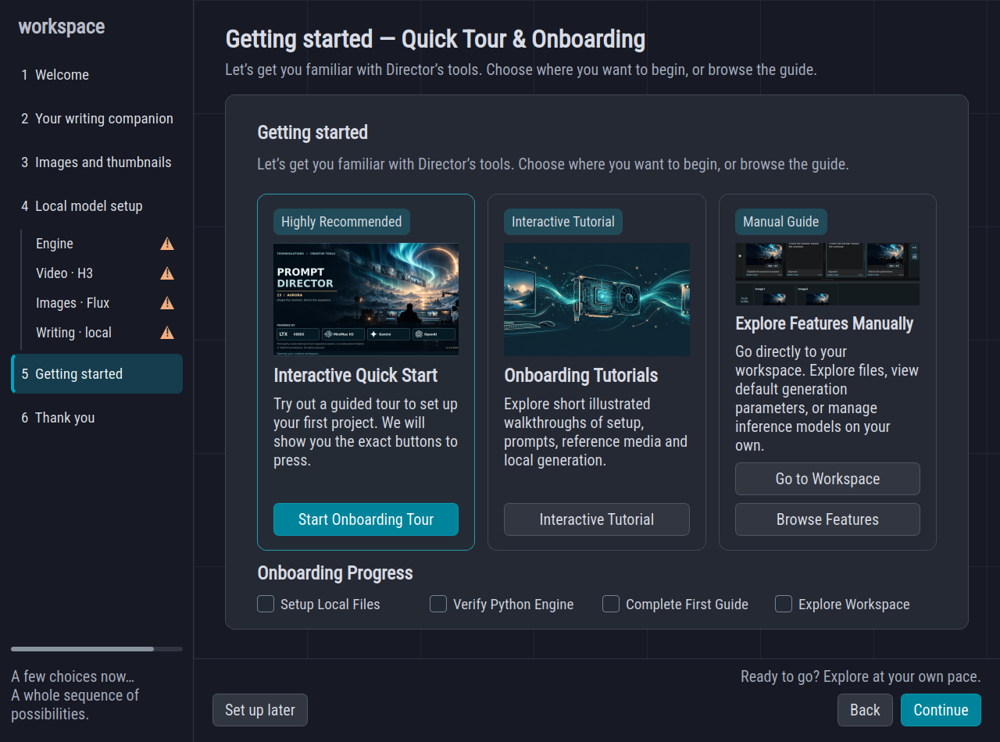
The thank-you page has a five-slide showcase with arrow buttons and direct slide selectors. Review source choices and pending setup shows your configuration summary. Support & Donate remains a placeholder until the donation link is available.
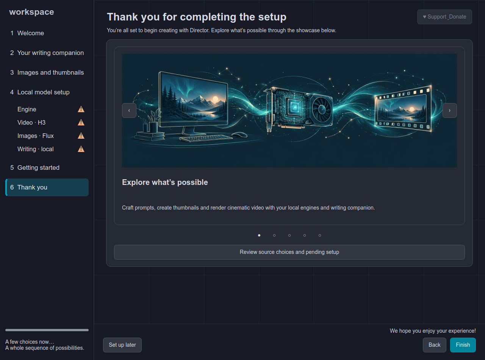
Use LoRAs for local generation
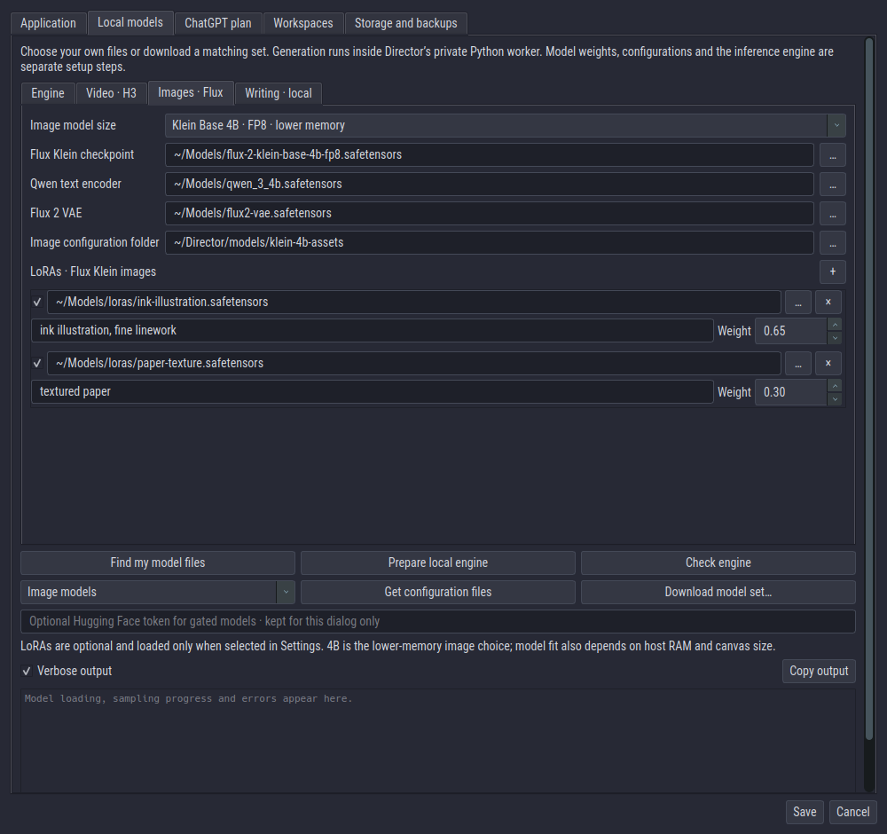
Open Settings → Local models → Video · H3 or Images · Flux. Each page has its own LoRAs list. Click + to add an adapter, then use … to choose its .safetensors file. Repeat + to stack more adapters. Choose files trained for the selected model and size: H3 video adapters belong in Video, and Flux Klein adapters belong in Images.
Enter the adapter's trigger words and set its Weight from 0.00 to 1.00. A weight of 1 applies full strength; lower weights reduce its effect. Turn off the row's checkbox to retain it without using it, or choose × to remove it. Zero weight also disables the adapter and its trigger words. Save Settings to use the list; Cancel leaves the saved configuration intact.
Each local render adds the enabled adapter's trigger words to its generation prompt. Image adapters also apply to locally generated tile artwork. Your authored prompt remains unchanged, and image and video triggers stay separate. Duplicate trigger phrases already present in the prompt are not appended again.
Adapter files remain in their selected locations, and Director applies their contributions without changing the base checkpoint. Standard LoRA matrices are supported; DoRA adapters are not supported. Incompatible targets or dimensions appear in verbose output. The setup wizard keeps these advanced settings intact but does not show LoRA controls.
Render in order and arrange your panels
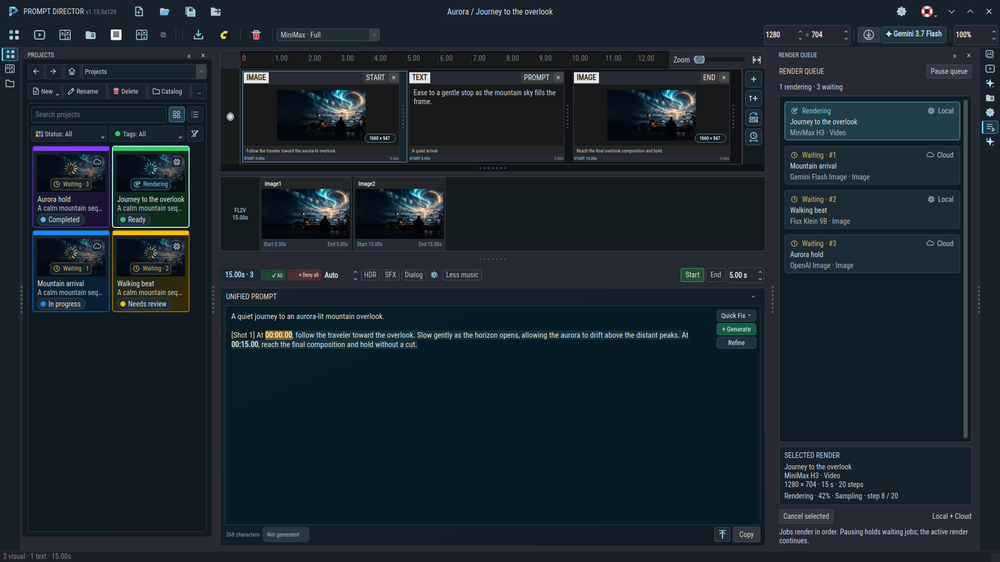
Queue local and cloud renders
Start a local video from Video Preview → Generate locally. Generate artwork from a timeline segment, a model's approved artwork request, or Effects Library → Add your own → Generate thumbnail. Director adds these image and video requests to the same Render Queue, including local Flux, local H3, Gemini image and OpenAI image requests.
One render runs at a time, in submission order. You can keep editing and switch projects while the queue works. Each request keeps the prompt, model settings, reference media and output size it had when submitted. Images return to the original project's segment; an edited or replaced target is preserved. Saved projects retain generated videos as their preview attachment.
Open Render Queue from its icon on the right rail. Select a job to see its model, dimensions, state and available progress. A failed job keeps its error in the selected-render details.
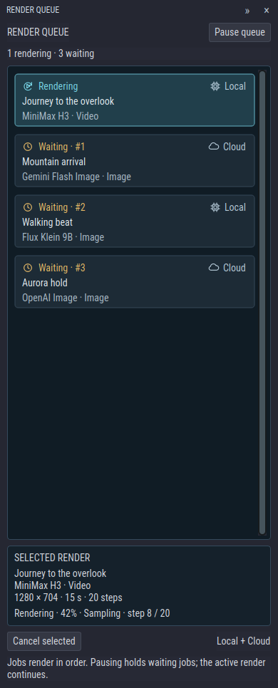
Read the thumbnail indicators
The chip means a local render; the cloud means a cloud image service. The queue also spells out Local or Cloud. A cyan progress icon marks Rendering; an amber clock marks Waiting, followed by its queue position.
Project cover images show an animated spinner while their jobs are waiting or rendering, with a small source icon and a state badge. These temporary indicators do not change the project's saved status, tags or card color. If a project has several jobs, its active render takes precedence on the cover; the queue lists every job separately.
Pause or cancel
Pause queue holds waiting jobs while the active render continues. Choose Resume queue to continue. Select a job and choose Cancel selected to remove a waiting request or request cancellation of an active render. Active jobs show Cancelling until their worker finishes. A cloud request already in progress may need to return before cancellation completes; its result will not replace the segment.
The queue belongs to the current app session. Closing Director cancels waiting jobs and requests cancellation of the active render while finishing project saves. Completed media and saved project edits remain available.
Use collapsible panels
Click an outer icon to open its panel. Click the active icon again, or the double arrow in the panel heading, to collapse the column to icons. Switching panels retains their contents. Projects, Effects Library and Media Catalog start on the left; references, previews, files, properties, the queue and AI activity start on the right.
Drag a panel heading to move it. Right-click the heading for docking locations, supported floating options, or Close panel. Effects Library retains its panel sizing controls under Panel sizing and options. You can reopen a closed panel from its icon. Positions and column widths are remembered. A workspace without Reference Media hides that panel and its icon; returning to a supported workspace restores it if it was open.
The integrated header keeps file commands and window controls beside the centered project title, with workspace, preview, output-size and provider tools on the next row. Drag empty header space to move the window; double-click to maximize or restore. The timing overview stays beneath the timeline.
Continue: Local generation · Project browser · Complete feature guide
See every beat. Shape every transition.
Build the sequence in pictures and words
Director’s timeline gives your prompt a visual structure. Each card has a duration, a place in the story and a prompt you can edit. Mix reference images, source clips and text to describe the sequence at the level of detail you have today.
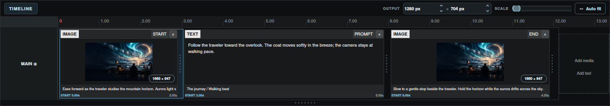
Bring in the right material
| Segment | Use it for | Add it with |
|---|---|---|
| Image | Identity, composition, an opening state or a target pose | Add media or timeline drag-and-drop; PNG, JPEG, WebP and GIF |
| Video | Source footage or movement context | Add media or timeline drag-and-drop; MP4 and WebM |
| Text | An action, pause or transition without its own reference image | Add text |
Drop media near the position where you want it inserted. The timeline shows when it is accepting a drop. Project archives and Director JSON dropped into supported project or timeline areas open or import their workspaces.
Videos use a preview frame from the clip’s final second for the timeline and AI image context. The complete source clip remains available for project storage and export. A GIF is handled as image media; use MP4 or WebM for a video segment.
Make timing tangible
Drag a card to reorder the sequence. Select it and enter a precise value in Duration to edit its length. The sequence summary shows the total; each card shows its starting time. Image and video cards also show source resolution.
Drag the dotted divider between two cards to transfer time from one to the other: moving it right lengthens the left segment and shortens the right, and moving it left does the reverse. Their combined duration and every later start time stay fixed. The drag snaps to frames and stops at one frame per segment or the available video source limits. The final card's right grip changes the overall length; the Duration field still edits a single card.
Recognized timecodes in the unified prompt follow manual timeline edits
immediately, using local pattern matching without an AI request. Director
counts through the segments in order and highlights MM:SS.xx, HH:MM:SS
and 24 fps SMPTE codes. A range uses both segment boundaries; a lone code uses
the segment's Start or End frame mode. Reordering cards, dragging a
divider, editing Duration or changing that frame mode updates the codes while
preserving your prose. Resizing keeps the text cursor and selection in place.
Click a card to emphasize its matching timecode and scroll the unified prompt to it. The cursor lands just after the start code, or the end code in End mode. Typing refreshes the highlights without changing the timeline or rewriting your text. Broken codes are skipped, later valid codes continue matching in order, and extra cues stay as written. Repair a code to reconnect it on the next timing edit.
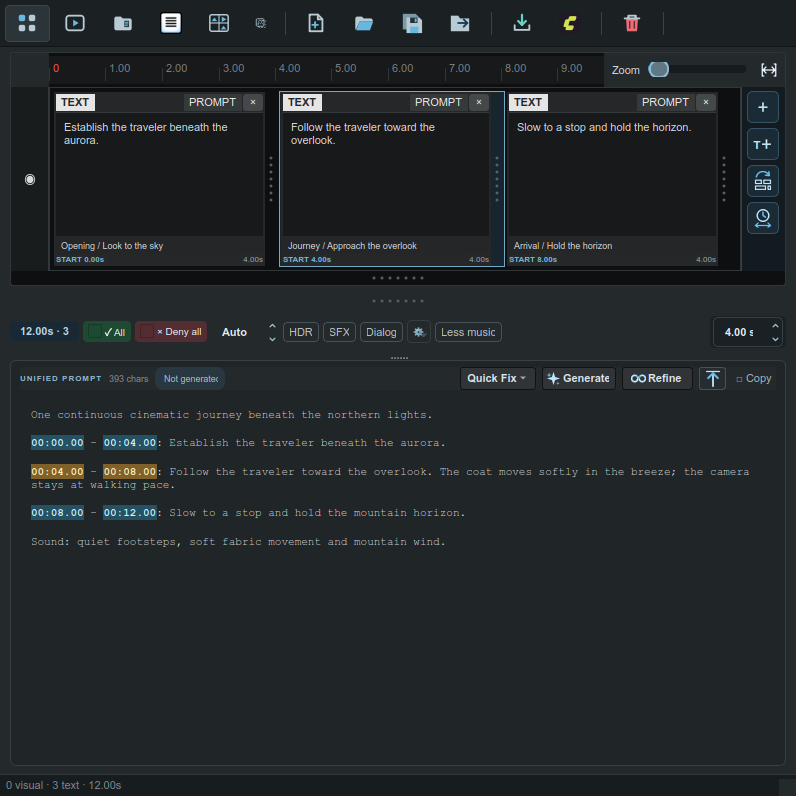
Use the Re-time all clock button beneath Rewrite Timeline in the right rail to distribute time using dialogue delivery, action, camera movement, frame roles and shot pacing. Set the sequence-length box below the timeline to the desired total first; Auto (0) keeps the current total. The proposal moves the tiles and offers approve/revert controls. Approving or rejecting any timing change resolves the complete timing pass. Segment prompts, visual directions, global guidance and the unified prompt remain unchanged. Video source limits and the workspace's duration limit still apply.
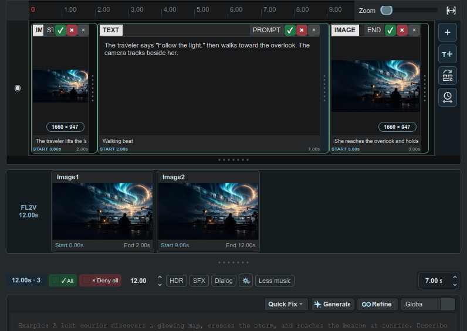
Right-click a card and open Split segment. At clicked position divides the card where you clicked. 2-way split and 3-way split create equal, frame-aligned parts with these choices:
| Choice | Result |
|---|---|
| Keep prompt | Each part keeps the original prompt |
| Divide prompt with AI | The model distributes the prompt's action beats chronologically across the parts |
| Hard cuts + close-ups with AI | The model divides the action into shots, establishing it first and cutting to close-ups in later parts |
Every split preserves total duration and original media. Video parts use consecutive source intervals. AI splits use the configured prompt provider and offer one review for the entire split: approve any part to keep all parts, or deny any part to restore the original segment. Other segments and the combined prompt stay as authored. Each part needs at least one frame. Pending timeline reviews and the workspace's Maximum shots setting control availability.
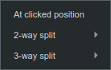
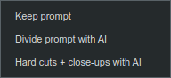
Use Zoom beside the timeline ruler to inspect a passage. The Fit timeline icon at the right edge brings the whole sequence into view; moving Zoom all the way left also fits the sequence. Drag the dotted lower grip to make the visual previews taller. Smooth horizontal scrolling helps you move through longer plans.
The conditioning tiles beneath the timeline show larger previews, frame roles and Start/End timing values. Text segments remain in the overview with their own prompts and time ranges; adding, resizing or removing a segment updates the strip. Scroll horizontally to see additional segments and references. Drag the dotted handle beneath the tiles down to enlarge them, or up to hide the strip completely. Double-click that handle to hide or reopen the strip. Its size and collapsed state are remembered.
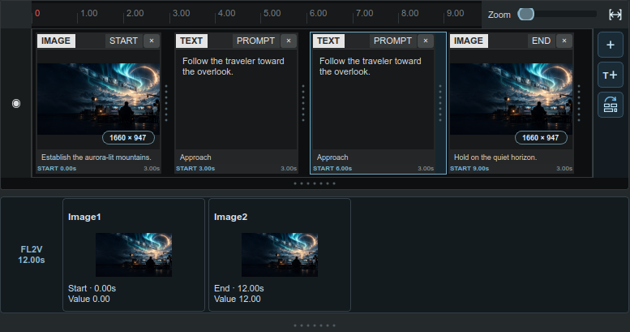
There is no fixed segment-count or total-length cap in the editor. The renderer you use still determines which output lengths it can produce.
Anchor the opening and the destination
Start frame tells a compatible workflow to begin a segment from its supplied image. End frame describes the image it should reach by that segment’s end. These controls are available in LTX and MiniMax.
Click a card to edit its segment prompt. In MiniMax, this automatically switches the upper editor to Segment, including when you click the selected card again. Choose Global to return to whole-sequence direction. MiniMax keeps an independently editable unified production prompt below it. Refining a segment can update its duration and the timeline; typing in the unified box preserves segment timing.
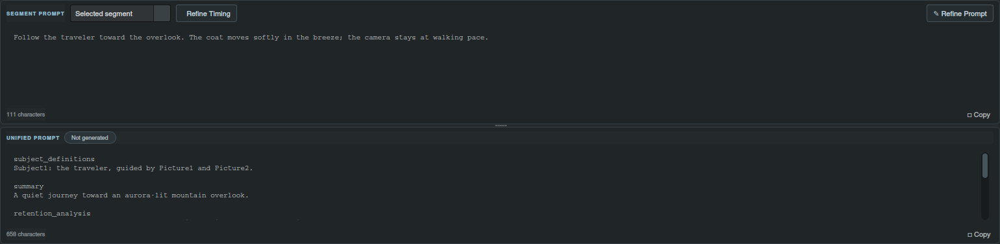
Update the image without rebuilding the beat
Use Replace media, or hold Ctrl while dropping media onto a card, to retain its duration, prompt, role and identity while changing the source. This is useful when a revised pose or a cleaner frame is ready.
An image card’s context menu includes Copy image and Paste image to replace, using the original-resolution source. For a text card, Convert to image segment lets you add an image while keeping the written beat. Export image and Export video place the original media in the project’s download folder.
Choose Convert to text segment on an image or video card to keep its prompt, visual direction and duration as a text beat. Its original file remains intact; the text segment carries no media or source trims.
When opening older projects, Director checks the stored media type and normalizes media names and cache extensions. Duplicated attachments and media exports use safe filenames with the actual file extension, preserving the original source bytes.
Delete a card with its close control, the toolbar’s Delete selected action or the context menu. Revisit the surrounding action after a large sequence change so the written transitions still describe the plan you intend.
Build the plan from a timed brief
In a unified workspace, paste a brief whose timed-action lines use 24 fps SMPTE ranges:
00:00:00:00 - 00:00:03:00: Establish the traveler beneath the aurora.
00:00:03:00 - 00:00:08:00: Follow the traveler toward the overlook.
00:00:08:00 - 00:00:12:00: Settle into a quiet horizon hold.
Director matches the actions to existing segments in order, preserves their media, resizes their durations and creates text segments for extra valid actions at the end. A whole-brief paste replaces the brief; a timed-action-only paste retains the surrounding sections.
Start at zero and keep ranges continuous, ascending and nonempty. The final two digits are frames from 00 to 23. If a range is missing or invalid, unmatched cards turn gray while their media remains intact. Correct the timed block or refine the prompt to reconnect the plan.
Continue: Prompt workflows · Exports · Complete feature guide
Direct every segment. Keep the full prompt in view.
All timeline workspaces use one prompt panel. Its header selector offers the scopes supported by the workspace: Segment and Global for segmented LTX and Generic workflows, plus Unified for MiniMax production workflows. Each document stays separate. Select a timeline card to edit that segment, change its frame role or refine its wording and duration. The Prompt Refinement workspace opens its standalone draft in Unified scope.
| Workspace | Production format |
|---|---|
| LTX Video | Segment prompts and shared global direction for LTX timeline export |
| MiniMax · Standard Guide | Guide-based integrated description, soundscape and music sections |
| MiniMax · Full Guide | Guide-based subject definitions, summary, retention analysis, detailed description, soundscape and music |
| MiniMax · Standard | Supplied skill conventions for T2VA, I2VA, FL2VA and L2VA, with project variables |
| MiniMax · Full | Supplied six-section reference skill, including companion camera, speech and sound rules |
Refine a prompt on its own
Choose MiniMax · Refine from Project Type. Write or paste a production prompt, then click Refine. No media or segments are required. The editor fills the workspace; timeline, conditioning, segment timing, reference media and Director’s Intent controls are hidden.
Type / and use the existing annotation suggestions: /refine edits a nearby passage, /refine-global applies across the prompt, /keep protects a detail, /avoid excludes a detail and /focus adds emphasis. These remain editable note boxes, with the same completion and spelling features as the other prompt editors. A leading /refine note before the scene applies to the full prompt unless it identifies a narrower target. Completed global refinement notes are removed after a successful revision; other annotations remain. If the model returns the production text unchanged, the editor keeps your draft and annotations and reports no text changes.
Refinement uses only your current prompt and its inline annotations. It preserves the existing MiniMax format, stated timing, identities, dialogue and audio direction unless you request a change. Use Copy to take the result into your generation workflow. Save and reopen it as a normal project; each workspace keeps its own draft. Switching back to a timeline workspace restores its segment controls and draft.
Edit the beats, then develop the full prompt
Choose a scope from the prompt panel header. The heading identifies the document you are editing:
| Scope | What you edit and generate |
|---|---|
| Segment | The selected timeline beat only |
| Global | Director's Intent for the entire sequence; Generate/Refine acts on all beats and then rebuilds the MiniMax production draft |
| Unified | The independent production text in workspaces that support a unified production draft; MiniMax uses the selected template |
The same Quick Fix, Generate and Refine controls follow the selected scope. Unified Generate rebuilds from all current segments and reference roles. Unified Refine changes the production text without rewriting the timeline. Copy copies the active document. The timing overview and its resize handle remain above the panel.
Right-click the scope header and toggle Collapse prompt editor to hide or reopen the prompt body. That view preference is remembered, while the timing overview remains available.
Switching scope preserves your drafts. Pasting or editing Unified text does not change the timeline. Manual timing edits update recognized MiniMax timecodes locally. Segment wording reaches the production draft through an explicit Generate/Refine or synchronization action.
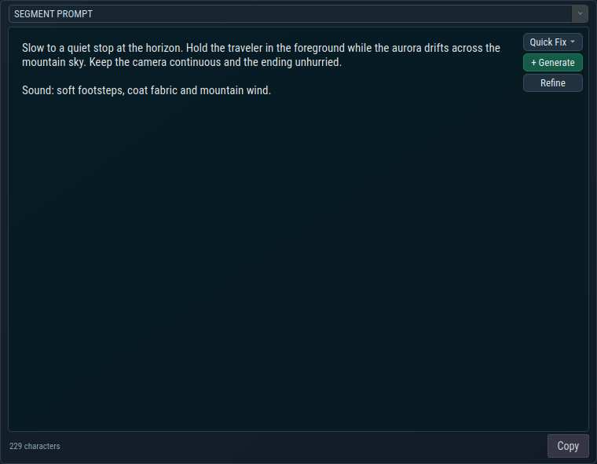
MiniMax gives each recognized shot passage a soft highlight. Its boundary starts
at the timecode (or the first shot's untimed text) and ends before the next
[Shot N] label. Blank lines between shots and the sound/music sections stay
outside the highlight.
Generate and Refine include a timecode on the first shot, including when
refining an older untimed draft. A first start frame uses 00:00.00; a first
end frame uses its segment end time, such as 00:03.00 for a three-second
segment. Prompt-only refinement preserves an existing opening timecode.
Older untimed first shots remain editable in saved projects.
While you type in a selected segment's prompt box, the unified editor scrolls to that passage and previews its wording changes in red and green. Approve keeps the change in that passage only; Reject keeps the original unified text. Clicking away from the segment editor also rejects an unapproved preview. Your segment edit stays saved either way. The shot label, timecode, comma/space separators, other shots and their spacing stay intact. These edits run locally without an AI request.
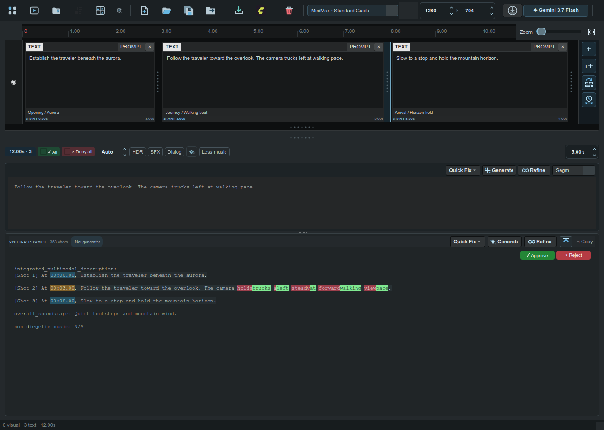
The Generate button in Unified scope rebuilds the production brief from every current timeline segment, including newly split or inserted beats. Current segment actions, order and timing take precedence over conflicting older global notes; beats that share an image still retain their separate action progression. It transfers segment content one for one, retaining wording wherever possible while adapting section placement, references, dialogue markup and timing to the workspace format. Complete action, appearance, dialogue and sound details take priority over length targets. There is no 350–500-word compression target; the production description grows with the source material. A response that the provider marks as truncated is rejected rather than saved as complete. Across workspace Generate and Refine instructions, word and sentence targets are soft guidance: preserving details wins. Refinement keeps content outside your requested edits; an explicit request to shorten or remove content still authorizes that change. If the timeline changes while generation is running, the app keeps your draft and asks you to generate again from the updated sequence.
Apply a saved Quick Fix
Use Quick Fix beside Generate inside the active prompt panel. A preset's Show in setting controls menu availability: Segment lists it in the segment menu, Unified lists it in the unified menu, and Both lists it in both. Selecting a preset always refines only the editor whose button you used. The segment button inserts the instruction at the bottom of the selected segment; the unified button inserts it at the top of the production prompt. The result uses that editor's normal inline approve/reject controls.
The included Refine Camera preset is available in Both menus with “refine camera angle and shot descriptions.” Format Prompt is available in Unified with “Format the spacing between shots to make it more human legable”. Choose Effects Library… to browse catalog artwork, add your own effects and edit presets. Set Apply to for Segment, Unified or Both, and enable Show in menu for the actions you want in Quick Fix. Imported effects keep this option off until you enable it. Presets are saved in your app settings. An empty editor disables its menu options; content in the other editor is not required.
Set Category in the preset editor to group related fixes. The menu shows category labels with separators between groups. Matching category names share one group, and only categories with actions available in that editor appear. Existing presets without a category use General. New installations include Refine Camera under Camera and Format Prompt under Formatting.
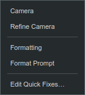
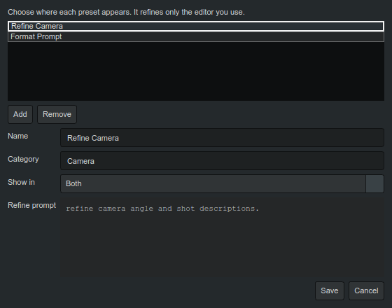
Apply a production brief to the timeline
In Unified scope, Generate and Refine edit only the production text. To apply a MiniMax brief to your sequence, click Rewrite timeline from combined prompt in the timeline’s right-hand rail, below ＋ and T＋. It aligns segment wording and timing to the complete brief and presents the timeline changes for review. Your combined prompt stays unchanged.
Adjust timing through the shared editor
Refine in Segment scope improves the selected beat and can resize that segment when its action or dialogue needs a different duration. Refine Timing changes its duration while preserving its wording. Other segments and the combined production text remain unchanged.
Select Global in the prompt panel to edit shared direction. Add an instruction such as /refine-global Resize the segments proportionally to 15 seconds, then choose Refine. Director scales the current segment durations to the requested total while preserving their proportions and individual prompt text. Other explicit global timing edits can change multiple segment durations. In MiniMax, the unified production prompt is then generated from the updated sequence. Manual segment edits preserve the draft's prose; recognized timecodes follow manual timing and Start/End frame-mode changes locally. Clicking a segment highlights its code and places the unified cursor immediately after it. See live timecodes for supported formats and incomplete drafts.
Direct motion through frame anchors
A Start frame defines the state at the beginning of its segment; motion continues from that state toward the following visual anchor. An End frame defines the target at the end of its segment; preceding motion must reach it. Generate and Refine compare the surrounding timeline visuals and their actual anchor times, including images separated by text-only beats. Camera direction uses changes in viewpoint, background landmarks and subject placement together; a subject moving left does not by itself imply a left pan. Untimed references retain their selected roles rather than becoming timeline endpoints.
Check conditioning at a glance
The strip under the MiniMax timeline shows large image previews, with each shot’s timeline Start and End times together in a shaded bottom row. Video tiles show their timeline range too; source trim ranges and MiniMaxCondFrame values remain in tooltips. Untimed references show their roles. Drag the dotted handle below the strip to resize it, or double-click to hide and reopen it. The previews expand with the panel. The strip flags an opening that needs to move to zero or an ending that needs to reach the sequence total. It describes your setup; it does not move media automatically.
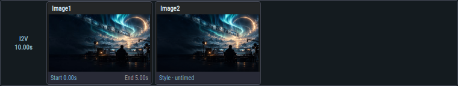
Both MiniMax templates receive ${workflow_name} and ${workflow_direction} from the current asset setup, including I2V, FL2V and last-frame L2V. Asset labels, subjects and speakers remain distinct. Dialogue requests can add original spoken lines when none are supplied.
Keep your direction and drafts
Director’s Intent is available in Global scope. Prompt options and inline refinement notes remain available across timeline workspaces. Prompt Refinement uses only its standalone prompt and annotations. Switching scope or workspace does not submit an AI request. Projects retain segment prompts, global direction and each workspace’s production draft. Existing review, copy, synchronization and media tools remain available.
Continue: Reference images · Custom workspaces and exports · Complete feature guide
The Official Skill variants are additional defaults. They receive the detected workflow, duration, asset map, Director’s Intent, global direction, sound/dialogue/music options, and current prompt and instructions during refinement. Their worked-example subjects and timings are format illustrations, never preset content for your scene.
For two end-frame segments lasting 3.0 and 7.5 seconds, the condition values are 3.0 and 10.5. End frames use the cumulative segment ending time; start frames use the cumulative segment starting time. These are absolute target-video times, not each segment’s duration or a frame count. The strip is a setup guide; it does not modify external ComfyUI nodes.
Turn a draft into direction.
Put the creative intent into words
A reference image shows a moment. Director’s Intent tells the AI how the sequence should move: the performance, the camera path, the emotional pace and what should stay consistent. Write it once and keep it visible across the stock workspaces.
For the Aurora example: “Follow the traveler at walking pace. Preserve the mountain setting, cool blue light and warm lantern glow. End with a quiet moment at the horizon.” A useful intent describes what happens between the images, as well as the result you want to reach.
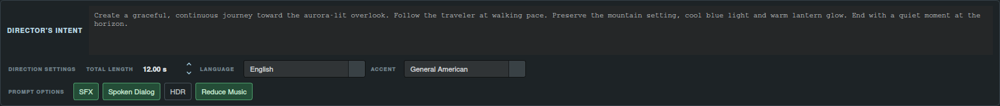
Set Total length to guide the sequence’s pacing, or use Auto to let the initial generation suggest it. Collapse Director’s Intent when you want a larger writing area; its contents and options remain available when you reopen it.
Edit directly, then refine
Write in the prompt editor as you would in any draft. Click a timeline card to switch the upper editor to Segment, then use its Generate or Refine button. The AI works on that segment's text, with nearby beats supplying continuity context. Other segment prompts and the lower production brief stay as you wrote them.
The working animation and streamed text appear in that same upper editor. When the result is ready, approve or reject individual paragraph changes there, or use Approve all / Deny all. These controls also let you review text generated for an initially empty segment. Use the lower editor's own buttons when you want to generate or refine the combined production brief.
Generate and Refine request a defined response format for the chosen operation. Segment requests return that segment's prompt and duration; the combined editor returns production text, and timing-only actions return durations. Quick Fix uses the contract of the editor where you clicked it.
Director checks the completed response before offering it for review. An unfinished stream, missing fields, invalid timing or a response for a different operation is rejected and follows your configured retry settings. The existing draft stays available if the provider cannot complete a valid response.
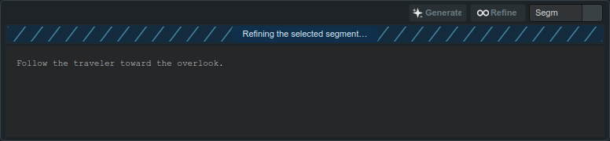
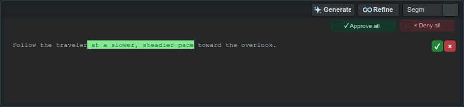
Approving a change removes its review colors and strikethrough. Approve all also clears the selected segment's text review, leaving its accepted wording plain and editable.
LTX’s Refine Timing is useful when the words are right but the beat needs a different duration. It keeps the selected prompt’s wording. Prompt refinement can change both wording and the selected duration; the rest of the LTX sequence remains intact.
Keep requests beside the passage
Type /, choose a suggestion and press Tab. Director turns the directive into an outlined editable note. Click into the note to write or change the instruction; it supports wrapped and multiline text.
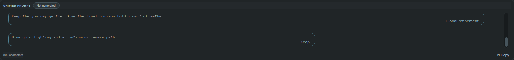
| Note | Use it to say | Example |
|---|---|---|
/refine · Refinement |
How a nearby passage or cue should change | “Make the approach slower and describe the coat movement.” |
/refine-global · Global refinement |
How the entire draft should change | “Keep one continuous shot and give the final hold more room.” |
/keep · Keep |
Which detail should remain | “Preserve the blue-gold lighting.” |
/avoid · Avoid |
What the revision should exclude | “Avoid a sudden camera cut.” |
/focus · Focus |
Which creative element deserves attention | “Focus on the transition from walking to stillness.” |
A successfully applied global refinement note is consumed after refinement. Other notes remain as creative guidance. Remove a note through its context menu when you no longer need it. Copy and export preserve notes as readable directive text, so review the visible draft before sending it to a renderer.
Plan the sound of the scene
SFX requests sound direction connected to the action: footsteps, fabric, impacts, water or environmental ambience. Reduce Music asks for scene-specific ambient sound to discourage unwanted music. These settings guide the generated prompt; the video model determines the final audio result.
Enable Spoken Dialog to expose language and accent. Both fields are editable, so you can describe the voice the scene needs. Leave them on image/context guidance when you want the supplied material to determine those attributes. Put exact wording in your intent when a specific line is required.
HDR adds quality-oriented prompt direction, including the LTX global quality prefix. It does not change the resolution or dynamic range of imported files.
Polish without breaking the flow
When an installed system dictionary is available, prompt and description editors underline possible spelling errors. Right-click a word to choose a replacement. Copy takes the current visible editor text to the clipboard.
Request progress stays in the app. Set timeout, retry count and cooldown in Settings → Application; retries show their progress and provider errors explain the failed request. MiniMax also provides a retry action after an unsuccessful operation. Your configured provider handles generation and refinement; no video is rendered inside Director.
Continue: Prompt workflows · Installation and provider setup · Complete feature guide
Give every reference a purpose.
Four sources. One coherent production brief.
Use a picture to guide a face, wardrobe, atmosphere, prop or composition without placing that picture at a particular second. MiniMax’s four mixed reference slots keep images, videos and sound samples beside the timeline and production brief. Each reference carries its own role and notes.
Reference media is available in MiniMax Full and Generic workspaces with reference slots enabled. Conditioning-only MiniMax workspaces use timeline conditioning media only. Saved references from another workspace remain in the project but are excluded from generation, artwork requests and exports while unsupported. When references are unavailable, the panel hides. Returning to a supported workspace restores its previous dock position and open state; a panel you explicitly closed stays closed.
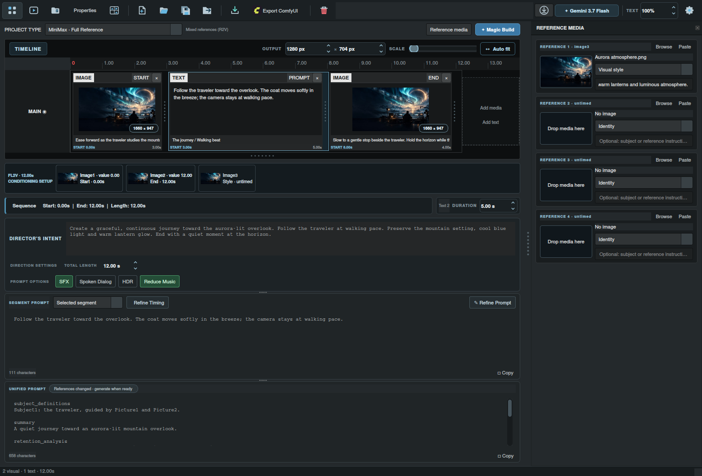
Add the image. Define the role.
Open Reference media in a MiniMax timeline workspace. Drop an image, video or audio file into any of the four slots, click Browse, or use Paste for clipboard image pixels or a local media file. Choose the role and add notes describing exactly what to use.
If you change a reference while Unified Prompt Generate or Refine is running, Director keeps your existing draft and holds the outdated response for review. Run the action again to use the updated reference.
| Role | Guide the generation toward |
|---|---|
| Identity | A subject’s recognizable features |
| Wardrobe | Clothing, accessories and their details |
| Setting | Environmental or location attributes |
| Visual style | Lighting, palette, atmosphere or treatment |
| Object / prop | A particular item and its appearance |
| Composition | Framing and spatial arrangement |
| Voice / speaker | Vocal identity, timbre or performance |
| Sound / ambience | An ambient or physical sound texture |
| Motion / camera | Movement or camera behavior from a video |
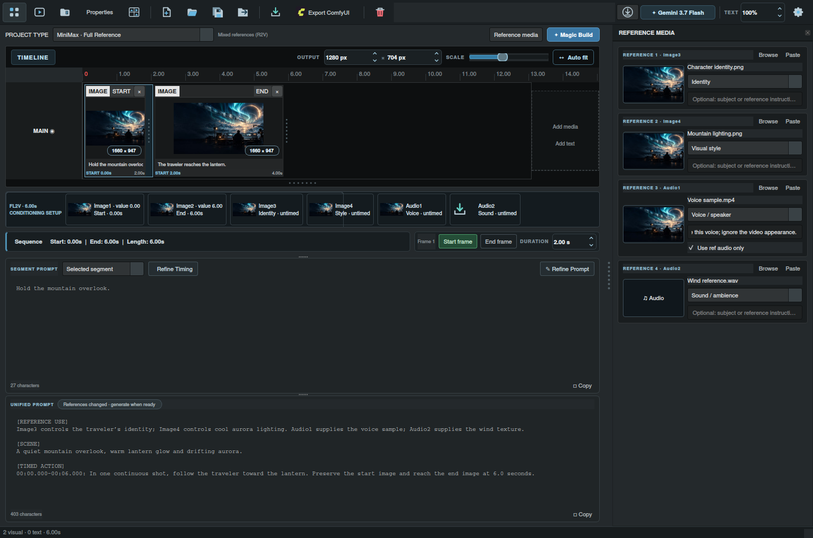
For the Aurora scene, choose Visual style and write “Use the cool sky, warm lanterns and luminous atmosphere.” That gives the picture a clear job while the timeline continues to describe when the traveler moves and arrives.
References keep their original resolution in the saved project. AI analysis uses a size-limited copy. Roles and notes travel with the .LTXD project. Right-click the reference image and choose Export Media to save the full-resolution stored image into the project’s export folder. It also appears in Recent exports. Video and audio references retain their original media extension when reopened or exported; their thumbnail does not change the filename. Existing .LTXD references recover the extension from the stored source. Automatic filenames avoid overwriting earlier exports. Clear in the same context menu removes only that slot’s reference; it does not remove timeline media or change the sequence’s duration.
Use a video for its soundtrack
For an uploaded video sample, enable Use ref audio only to use its soundtrack without borrowing its visual appearance or motion. The checkbox is available when the imported video contains a usable audio stream. Leave it off to use the video and its paired soundtrack together. Standalone audio files can be dropped into a slot directly.
Video and audio originals are copied into Director’s managed media folder. Their soundtrack and selected audio-only state travel inside saved .LTXD projects. Gemini receives the actual audio for prompt analysis; with OpenAI, provide explicit sound notes because this transport does not audition reference audio. Both providers export the real audio into the ComfyUI graph.
Export directly to ComfyUI
Choose Export ComfyUI in the top toolbar, marked with Comfy’s official logo. The exporter adapts the supplied MiniMax graph, fills its prompt and duration, and applies the pictured 16:9 / 0.5 MP / multiple 32 / 20-step defaults, and copies referenced media into ComfyUI/input using the existing ComfyUI root setting. Exported Load Image, Load Video and Load Audio fields use those relative input paths. Repeated exports avoid overwriting prior input files.
All timeline images connect directly to their timed condition nodes, including the image at zero seconds; timeline videos feed their full frame batch and soundtrack into a timed audiovisual guide at their starting position. Later image checkpoints are chained at their cumulative timeline times. Two end images lasting 3.0 and 7.5 seconds anchor at 3.0 and 10.5 seconds. Audio-only references go to standalone audio inputs; untimed video-reference soundtracks go to paired video-audio inputs.
The graph retains the supplied model, sampler and decoder subgraphs. ComfyUI needs the same native MiniMax and custom nodes used by that base workflow. The export checks the native node’s media limits: 9 image inputs, 3 video inputs and 3 standalone audio inputs. Director still offers four mixed reference slots; timed conditioning assets are additional inputs.
Choose the right source pattern
MiniMax recognizes the supplied combination and prepares the prompt around it:
| Your inputs | Recognized workflow | How to direct it |
|---|---|---|
| Text segments | Text to video | Describe the scene and action; use segment durations for pacing |
| One timeline image | Image to video | Describe movement from or toward the image, using its frame role |
| Two timeline images with start and end roles | First / last frame | Describe the visible path from the opening state to the destination |
| Other multiple-image timelines | Multiple keyframes | Describe the progression through the ordered visual checkpoints |
| Timeline video without images | Video to video | State whether to edit, continue or draw movement guidance from the source |
| Images and video, or an untimed reference slot | Mixed references | Explain each asset’s role and which attributes to preserve |
A start image anchors the beginning of its segment; an end image is reached at the segment’s end. Hover over the detected workflow label to inspect asset labels and checkpoint times. Video ranges follow the source metadata retained with the segment.
References and timeline frames work together
Use MiniMax Full Reference to combine timeline checkpoints, source video, and four untimed media references in one production brief.
An untimed image supplies attributes rather than chronology: it does not add a segment, move a checkpoint or extend the plan. For a sequence guided entirely by the reference slots, add a text segment to establish the action and duration.
Generate, review and refine
Write your intent and develop the segment prompts with Magic Build. Review reference roles in the full production draft and edit it directly. After segment changes, the Regenerate action in the change notice can rebuild an existing draft using the selected template.
Image labels and video labels are assigned consistently within the asset inventory. Changing a reference remains a preparation step; you choose when to submit another generation or refinement request.
Continue: Prompt workflows · Refinement · Complete feature guide
Drag a reference image into your file manager or the timeline to use its full-resolution image. Drop a still image from your file manager onto a reference slot to replace it. The image highlights on hover, and a blue border marks an accepted drop.
The final Video Combine node saves a 24 fps WebM with YUV420p, CRF 15, metadata and audio trimming enabled. Media and conditioning occupy separate groups; unused sample guides and video branches are removed. The Get Condition → Set Cooked Condition connection is retained when there are no timed guides.
Timeline videos connect Load Video → IMAGE and Load Video → audio to the timed condition node at the clip’s start. The full loaded batch supplies frame conditioning; its audio shares the same time anchor. Opening still fallbacks and tail-only video samplers are omitted. Still-image checkpoints retain their conditioning guides. Guided output may differ from the source; no automatic audio crossfade is applied.
Timeline video segments use MiniMaxH3AddGuide only, with frames and audio at the same start index. They do not consume native video-reference inputs. Prompt generation and refinement use the original a32 rules and asset labels.
Timeline images and videos are conditioning media only. Native reference inputs are populated exclusively by the four reference slots. The Lazy Switch and first-frame Set/Get detour are removed from exports.
Effects Library
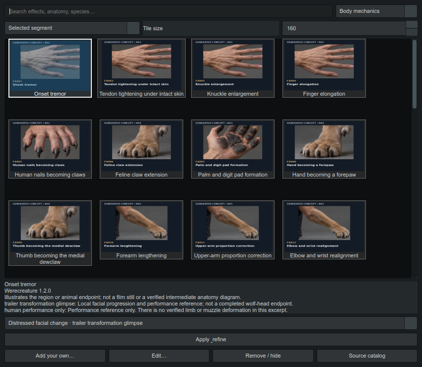
Open Effects Library from the main toolbar or the last item in either Quick Fix menu. Search by effect name, anatomy, species, stage or prompt wording, and narrow the results with the category selector. The app includes all 100 Werecreature effects, their original catalog artwork, linked excerpt previews, 17 recorded source soundtrack samples, and 17 video reference tiles. Each bundled tile has a refinement instruction; source sounds refine sound design and video references refine the visual direction.
Use Grid / List to switch thumbnail layouts. Select an effect and click the heart to save it as a favorite; Favorites filters the browser to your saved entries. These choices do not change the source catalog or Quick Fix menu.
Select a tile to see its source and preview notes. Linked video excerpts play silently and automatically inside the selected tile. Click a sound tile to play its recording; click it again to stop. There is no separate preview selector. Right-click a tile for alternate previews and original sample exports when several references are available. Generated concept artwork is an appearance aid; excerpt notes describe what the footage actually demonstrates. The separate Source catalog opens the complete offline illustrated catalog and its provenance.
Apply an effect
Drag a tile onto a timeline segment or its prompt editor. A green outline accepts the effect; a red outline means that target cannot accept it. The segment must have prompt text and refinement must be idle. A segment drop selects that segment and refines only its prompt, even if the editor previously used Global scope.
You can also choose Selected segment or Unified prompt, select a tile, and press Apply & refine. Each effect has an Apply to setting in Edit: Segment, Unified, or Both. Imported effects begin with Segment scope. Applying an effect uses the existing prompt review flow so you can inspect the rewrite. It preserves the shot structure and existing subject labels. Previewing a clip or sound does not attach it to an AI request.
Sound
The Sound category contains written sound recipes. Source soundtracks contains the 17 actual recorded WAV samples. Sound tiles with recordings display a play symbol in the thumbnail; click to listen. Written recipes without a supplied recording are identified in their notes. Audio starts only on a click. Save sample copies the selected recording to a location you choose. Samples are mixed source soundtracks that may contain dialogue and music, rather than isolated foley. Only one library preview plays at a time; starting it pauses the project video.
Both sound recipes and recorded soundtrack tiles can refine the wording in a segment. Their instructions describe the intended sound; they do not attach or copy the mixed recording. Recordings remain preview assets until you explicitly attach them through a supported media workflow. Visual effects do not automatically enable their optional sound recipes.
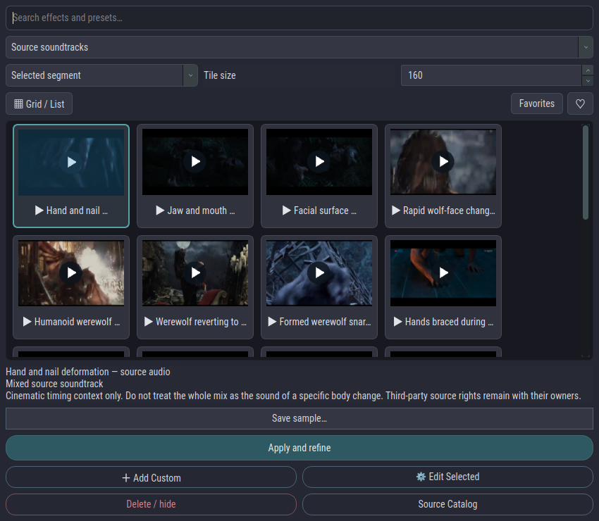
Automatic thumbnail maintenance
At startup, a background job checks the library artwork and preview files. Videos use silent, compressed 320 × 200 thumbnail copies, keeping the full source available for export. Missing or corrupt thumbnails are rebuilt from the associated video or a sound waveform where possible; corrupt cached videos are regenerated. The supplied catalog artwork stays in place whenever it is valid. Repairs use the application cache, preserve your files and edits, and need no image model or GPU generation. Unavailable sources are reported in the library instead of blocking other tiles.
Your effects and menus
Your existing Quick Fixes migrate automatically with Show in menu enabled. Imported catalog entries have this option off. Select a tile, choose Edit, and check Show in menu to expose it in the appropriate Quick Fix menu. Category headings and the existing button menus remain compact.
Choose Add Custom to enter a name, category, scope and refinement instruction. Browse for a thumbnail and optional video or recording. Generate thumbnail with default image model uses the image source selected in Settings. Save to keep the effect. Cancel leaves the entry unchanged. Editing an imported entry saves your own override; the shipped source catalog remains intact. Delete / hide removes custom entries or hides an imported entry.
Drag the dock title to move or float the panel. Right-click the title for left, right, bottom and floating options, plus width and height boxes. Adjust Tile size to fit more items or inspect the artwork. Panel placement and tile size persist between sessions.
A home for every creative project.
Turn individual experiments into a collection of work
Your project is more than a prompt. It includes the reference media, the timing, the creative intent and the decisions that make the sequence yours. Director’s local library keeps that context together in a gallery you can browse, organize and reopen.
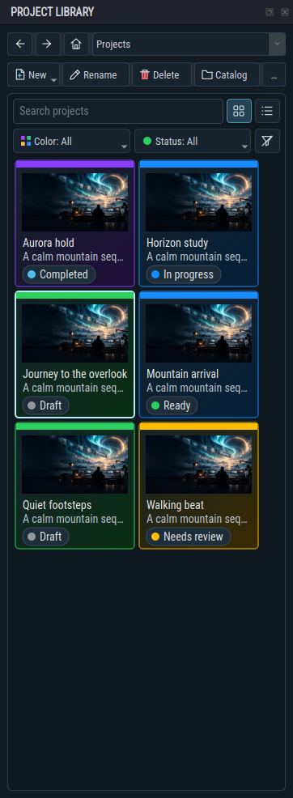
Save it with a name and a cover
New Project immediately creates an empty Untitled project in the library. You can switch to another project and return to its working draft before saving manually. Rename it and add a description in Properties. Choose Save to Library to save its content; later saves update that same project. In project details, choose a segment frame as its cover or upload a custom thumbnail. A recognizable cover helps you find the right plan as the library grows.
Open Projects from the toolbar. Select a saved project to return to it, or use its context menu to open it or edit the details. Search matches names, descriptions, statuses, tags and notes. Use the grid/list buttons beside search to choose a view. The … menu retains sorting, thumbnail sizes, duplication, details and archive controls. New, Rename, Delete and Catalog stay in the compact action row.
Arrange the library around your work
Assign a Collection to group related projects. Collections appear as gallery tiles, with covers assembled from member thumbnails. Open a collection or choose it from the breadcrumb menu. Back, Forward and Home navigate the library without opening or changing a project.
Select a project or collection and press F2, click Rename, or choose Rename from its right-click menu to edit the name directly on the card. Press Enter to save or Escape to cancel.
Choose Title A–Z, Title Z–A or Custom sorting. Dragging a project or collection establishes a custom order. Status and label filters help narrow the gallery; the app remembers your selected filter choices.
Make progress visible
A project has one Status and can have several additional Tags. Its status appears as a colored pill under the cover and description. The stock choices include Draft, In progress, Ready, Needs review, Completed and Failed. Older Done, Consider and Re-shoot statuses remain available. Customize definitions in Settings → Application.
Right-click a project and choose Status, or choose Group status on a collection to update all its members. The choices and color dots come from Settings → Application. Selecting a status updates both the saved status and the card color. Archived projects retain their status color and remain marked Archive. No status clears the status and returns the card to its neutral appearance.
The left Status filter lists your configured statuses with matching color previews. The right Tags filter lists your additional tags. Both menus stay open while you select multiple filters; More filters → Archive includes archived projects. The reset-filter button clears search and restores the active-project filters.
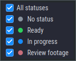
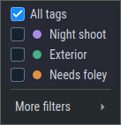
Archive a project when it should move out of the active flow while remaining available. Collection context actions can apply status, labels and archive choices to their members. Deletion is a separate confirmed action that removes the selected saved project.
Put the next steps beside the plan
Open Properties to edit the project name, description, collection, download folder, status, archive state and tags in a dock. Metadata edits save as you work. The context-menu project-details dialog provides another way to edit the same project information.
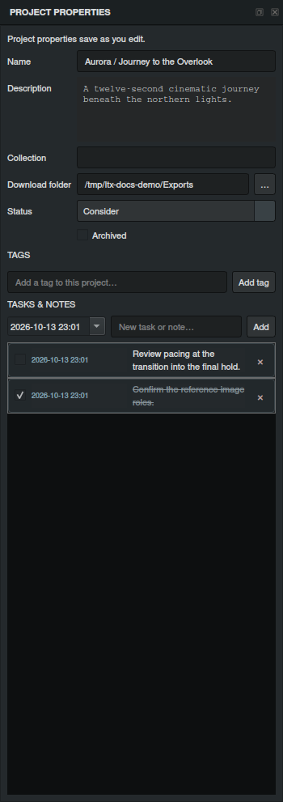
Add dated tasks and notes, edit their text or date, check them off when complete, and remove them when they no longer apply. A note such as “Review pacing at the transition into the final hold” stays with the project instead of becoming a loose reminder elsewhere.
Switch ideas without losing the working draft
Several saved projects can remain open as in-memory workspaces. Switching restores each project’s timeline, prompts, options and view. Use Save to Library to write creative edits to disk; closing the app saves dirty library projects with visible progress. Give a new unsaved project an initial library save or portable export to establish its destination.
LTX and MiniMax retain their prompt drafts across workspace changes. Projects also retain their attached review video and workflow JSON files, so you can return to the prompt and its production context together.
Carry the complete project
Export Project writes a portable .LTXD archive to the download folder. It preserves editable sequence state, original-resolution timeline media, prompt drafts, intent and supported project attachments. Open restores a native project; Import reads Director JSON.
Timeline previews are kept separately from the original media to make navigation and loading more responsive. Original-resolution files remain the sources used for project and media exports. The preview cache can be rebuilt; keep important work in a saved project or exported archive.
Arrange a workspace that stays comfortable
Click the outer icon rails to open or collapse panels. Move, resize, show or hide the project library, Properties, Preview and Project Files docks. The Render Queue keeps local video, local artwork and cloud image requests in order; its temporary cover indicators do not change saved project statuses. See the illustrated queue and panel guide. Supported docks can float; reference images stay docked inside the main window. Panel layout and sizes are remembered. Adjust toolbar text scale from 75% to 200% to suit your screen.
Continue: Video review · Portable exports · Complete feature guide
Bring the finished motion back to the plan.
Review in the same place you directed
After rendering in your video workflow, bring the result into Director. Keeping the video beside the prompt and timeline makes it easier to judge pacing, spot a transition that needs work and choose the frame for your next pass.
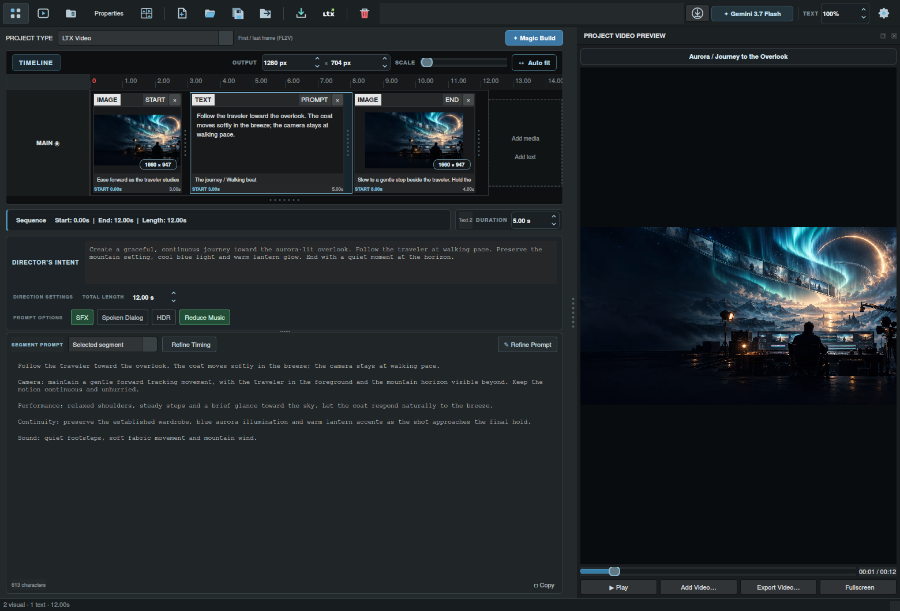
Attach and play a render
Save or open a library project, then open Preview from the toolbar. Drop the rendered video into the preview area or choose Add Video. Supported review files include MP4, WebM, MOV, MKV, AVI and M4V; successful playback also depends on the available codec support.
The project keeps its own attached video copy. Use Play and Pause to review the motion. Click the preview’s playback bar to jump to a moment. Fullscreen opens a larger player with its own controls; return to the dock when you want to compare the result with the prompt.
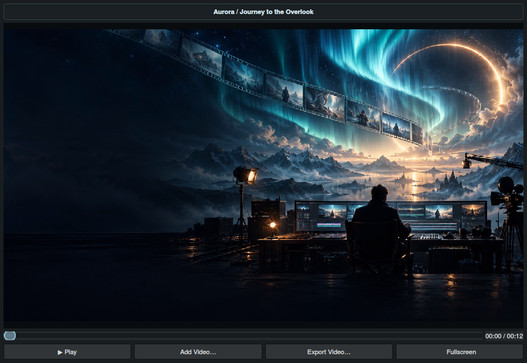
The preview loads the saved video when its dock is opened. Export Video copies the attached render into the project download folder for reuse or sharing.
Capture the moment you need
Pause on a useful frame and right-click the video. Choose Export Current Frame to save a PNG in the download folder, or Copy Current Frame to Clipboard to place the decoded frame on the clipboard. These actions are also available from the fullscreen video surface.
Use the copied frame to replace an image segment, or save it as a new visual checkpoint. Frame capture uses the decoded video image rather than the on-screen player size. It becomes available after a video frame has loaded.
Keep the workflow with the project
Open Project Files and add or drop ComfyUI workflow JSON. Keep several workflow attachments when a project needs alternative rendering setups. Select one to export it to the download folder or remove it from the project.
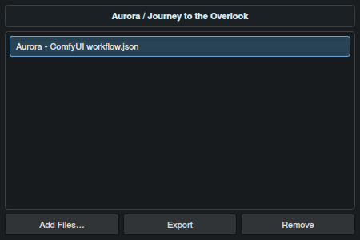
Attaching files does not run the workflow. It keeps the rendering setup available alongside the visual plan, and portable project exports can carry the supported attachments with them.
A practical next-pass workflow
- Render the exported plan in your chosen video pipeline.
- Attach the result to its Director project and review the pacing.
- Capture a useful frame or identify the beat that needs attention.
- Update the relevant image or inline refinement note.
- Refine, export and keep the revised plan in the same project.
Continue: Media replacement · Project organization · Exports
Finish the film, shot by shot
Shot Sequence brings completed renders together in one continuous preview, with the sound from your original movies. Every collection receives a dedicated Shot Sequence project tile. Open it to order shots, tune their joins, and bake a finished WebM.
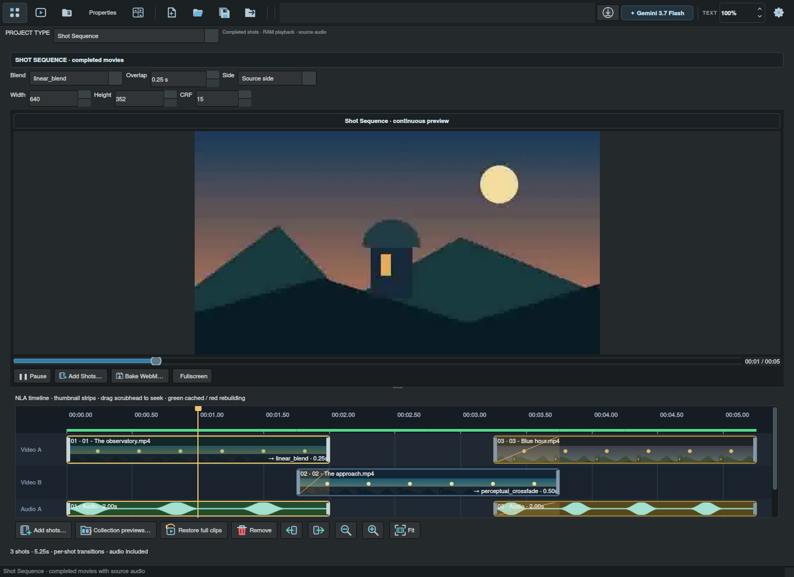
Bring in your completed shots
Open a collection and select Shot Sequence. Drop movie files onto the NLA timeline at the desired position. The blue border and insertion line show the closest shot boundary to the cursor. Use Add shots, or choose Add collection previews… to bring in the saved rendered videos from that collection. Director copies imports into managed storage; their originals and shot order travel inside saved .LTXD projects.
Hold Ctrl while dropping a movie onto an existing video or audio strip to replace that shot in place. The new movie keeps its full length, the sequence slot stays put, and only changed content and joins are rebuilt. If you drop multiple movies, the additional files follow the replacement.
Drag linked video/audio strips to reorder them, use the left/right buttons, or select shots and press Delete or choose Delete from the right-click menu to remove them from the sequence. The preview player stays on the assembled sequence; double-click a strip or drag the scrubhead to seek within that sequence. Save the project to keep its order, blend settings and output options. Completed shots import at their full source lengths, independent of generation duration limits. Intentional trims stay attached when you reorder, save or reopen them. Restore full clips re-reads the source movies and removes their trims. The sequence workspace has no duration ceiling. Right-click a video or audio strip to choose Shot status from the statuses configured in Application Settings. Both linked strips take on that status color. Statuses are saved with the sequence; assigning one leaves the preview cache intact. Choose Export segment video from the same menu to export that shot’s current source interval with audio to the configured download folder; it appears in Recent exports.
The NLA timeline places shots on alternating video tracks with linked audio tracks below. Strip widths follow actual movie duration; shaded regions show overlaps. Use +, − and Fit to inspect a long sequence, Ctrl-click to select multiple strips, and drag the time ruler or scrubhead to seek the assembled RAM preview. With the timeline or player focused, press Left or Right to pause and step backward or forward by one sequence frame. This also works in fullscreen; the playhead stays visible and stops at the first or last frame. Thumbnail filmstrips show moments from each source movie, and linked audio strips show the source waveform. Illustrated controls make importing, restoring, moving and zooming shots easy to recognize.
Trim the moment. Split the action.
Drag the left or right handle on a video or audio strip to adjust its source in or out point. Both linked strips move together, and following shots close up automatically. Edits snap to the sequence’s 24 fps frame grid and stay within the original movie, with a minimum of one frame. Drag back outward to recover hidden footage, or press Esc during a drag to cancel. Your source file stays intact.
Place the playhead inside a shot, right-click its video or audio strip, and choose Split at playhead. The two pieces remain adjacent without adding a blend or shortening the sequence. Both retain the shot’s status; the second piece retains its outgoing transition. Trim, move, export or delete either piece independently. The command is disabled when the playhead is outside the shot or on its edge.
Export segment video uses the current in/out range, copies the original video and audio codecs, and keeps the original container. Untrimmed movies are copied directly. Trimmed exports use FFmpeg stream copy for speed and unchanged encoded quality. Stream-copy cuts depend on the source keyframes and packet boundaries, so an export may include leading footage needed to decode the chosen start. The RAM preview and final bake use the exact edited sequence frame range.
Unchanged source blocks stay cached across trims and splits. Splitting adjacent pieces can reuse the assembled preview as-is; filmstrip thumbnails and waveforms follow each piece’s source range.
Shape the join
The defaults are perceptual_crossfade, 1 second of overlap, and Source side. Select a shot to edit its Blend, Overlap and Side in the existing top controls. Each shot owns its settings.
The selected shot’s settings control the join into the following shot and remain attached when you reorder or replace it. You can configure the last shot too; its settings take effect when another shot follows it. New shots copy their preceding neighbor’s settings, or the following neighbor’s at the beginning of the timeline. The first shot uses the initial defaults. After insertion, each shot can be edited independently. Settings appear on the video strip and are saved with the project; the timeline, mixed audio, RAM preview and final bake all use them.
| Mode | Result |
|---|---|
cut |
Remove the selected side's overlap and join the remaining footage directly |
linear_blend |
Mix pixel values through the overlap |
filmic_crossfade |
Mix in gamma-corrected linear light for a brighter photographic fade |
perceptual_crossfade |
Mix in LAB color space for a perceptual color transition |
For blends, Source side fades the source tail toward the next shot's head. Destination side reverses that overlap weighting. For cuts, Source side trims the source tail; Destination side trims the next shot's head. An overlap longer than an available shot is reduced to fit. Set overlap to zero for a direct join without trimming.
The source movies' audio follows the same joins. Blends crossfade the two soundtracks, while cuts trim audio on the selected side. Silent movies contribute silence; mono and multichannel sources are normalized to stereo for the finished sequence.
Watch continuously, in RAM
Adding or editing shots automatically starts a background preview update. Use the player's Play/Pause button to watch the assembled movie with source audio. The timeline scrubhead and player position stay linked in both directions. Scrubbing auditions the mixed sequence audio even while paused, then returns to the selected position; playback resumes only if it was already playing. During playback, a zoomed timeline scrolls to keep the playhead in view. Fullscreen, frame export and clipboard frame capture remain available.
Preview progress appears directly on the timeline. The thin coverage line above the strips shows green for completed cached regions and red for regions waiting to rebuild. As the worker completes more footage, the playable prefix grows. Scrubbing into unfinished footage keeps that position pending until it is ready.
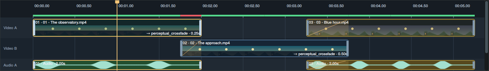
Changing a blend rebuilds the affected overlaps, while reordering or replacing shots reuses unchanged clip regions. Completed source blocks and joins are stored as disposable workfiles in the operating system's per-user cache: normally ~/.cache/ltx-director-director/shot-sequences/v1 on Linux, respecting XDG_CACHE_HOME, or the Qt local application cache location on Windows. The workfiles survive closing the app; the playable assembled sequence is held in RAM.
The preview cache keeps a bounded 128 MiB memory working set and prunes older workfiles around a 2 GiB disk budget. Decoded filmstrip thumbnails have their own bounded memory cache. Final-bake CRF changes leave the preview intact. Preview uses a reduced canvas; baking uses the selected output dimensions and original source movies.
Bake the final movie
Choose output width and height, then click Bake WebM in the player controls. The finished file includes video and source audio, encoded as VP9 and Opus. CRF defaults to 15; lower values retain more detail and usually produce larger files. Baking uses the same blend and overlap settings as the RAM preview at the selected output resolution.
Clips are normalized to 24 fps and fitted to the output canvas without stretching. Only overlap frame buffers and working audio are retained during composition; full-resolution movies do not need to be loaded as one giant image batch. Baking runs in the background with its own progress bar, and the finished file appears in Recent exports, where it can be opened, revealed or dragged into another application.
Make the workspace yours. Take the result with you.
Give every output a clear destination
Director brings prompts, source media and portable projects into your production workflow with distinct actions for each purpose.
| What you want to take out | Action | Result |
|---|---|---|
| Visible prompt text | Copy in the editor | Clipboard text for your generation workflow |
| Editable project and media | Export Project | Portable .LTXD archive |
| LTX timeline, prompts and media references | Export in LTX Video | Director JSON for ComfyUI |
| Original segment image or clip | Export image / Export video on a timeline card | Original source media file |
| Attached rendered video | Export Video in Preview | Copy of the project render |
| Current video frame | Video context menu → Export Current Frame | PNG captured from the decoded frame |
| Attached workflow JSON | Export in Project Files | The selected attachment |
| Custom workspace setup | Export in Settings → Workspaces | Reusable workspace-definition JSON |
On Linux with KDialog installed, file and folder pickers use KDE’s desktop dialog throughout the app, including model/LoRA selection, references, Effects media, completed shots, catalog imports, workspace imports and setup backups. Other desktops retain their available Zenity or Qt picker.
One folder. A visible handoff.
Set Download folder in project Properties for a project-specific destination. Leave it blank to use Settings → Application → Default download folder. Exports receive descriptive automatic names; repeated names get numbered suffixes so an earlier output remains available.
The download button signals completion with a pulse and badge. Click it for Recent exports. The panel stays directly below the download button with their right edges aligned, including when you move or resize the window. Open a file with a double-click, use the context menu for Open folder, or drag selected files into another application. Click inside the app outside the tray to dismiss it; switching to another window keeps it open. Use the broom to clear history. History remains available after restarting the app; moved or deleted files are marked unavailable.
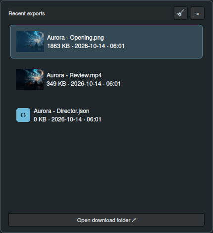
Save to Library stores the editable project inside Director’s local gallery. Export Project creates the portable copy in your download folder. Use both when you want a working library project and a handoff archive.
Connect the LTX plan to ComfyUI
Set the desired output width and height in LTX’s timeline header, then choose Export. Configure the ComfyUI working directory in Application Settings so Director can place media in the workflow’s input area.
Director JSON includes segment timing at 24 fps, prompt text, frame roles, supported video metadata and global direction. Text-only segments retain their type. When an imported video contains audio, export can extract and include its soundtrack as an audio segment for the receiving workflow. Export defaults include crop resizing and audio inpainting.
Use Import to reopen a supported LTX timeline JSON timeline. It restores supported image, video and text segments and global context; it is not an editor for every ComfyUI node or specialized track. For the complete native working project, use .LTXD.
Design a workspace around your process
Open Settings → Workspaces. Stock and custom definitions let you choose the editor structure and the instructions used for prompt generation and refinement.
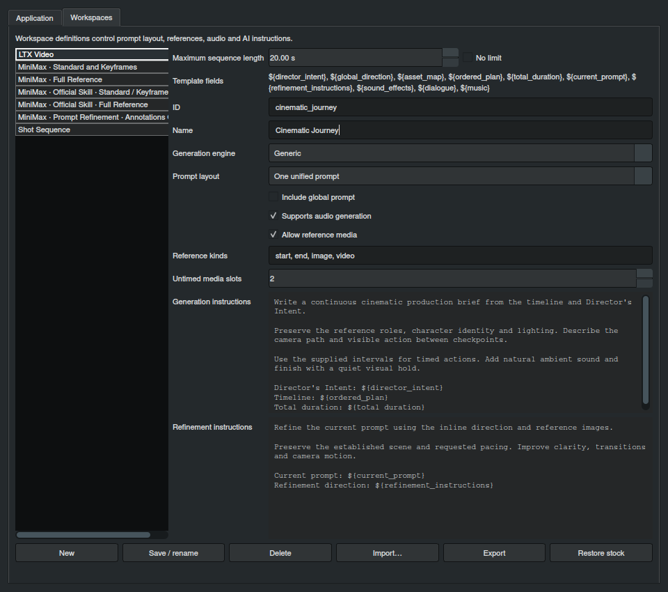
| Setting | Creative control |
|---|---|
| Name and ID | Recognizable selector name and reusable workspace identity |
| Generation engine | LTX, MiniMax Frames, MiniMax References or Generic |
| Prompt layout | One unified production prompt or individual segment prompts |
| Maximum shots | Maximum timeline segments; set 0 (Unlimited) for no count limit |
| Global prompt | Shared direction where supported by the segmented setup |
| Audio generation | Availability of audio-direction controls |
| Reference media and kinds | Which source types and reference attributes the workspace accepts |
| Untimed image slots | Up to two visual-reference targets where supported |
| Generation instructions | Your master direction for creating a first draft |
| Refinement instructions | Your rules for developing the edited draft |
Choose New, set the name, engine and layout, then write the generation and refinement instructions. Generic supports a unified or segmented layout for your own prompting approach. Its templates configure prompt authoring; they do not install or run a video model.
MiniMax workspaces default to 9 shots. Save a different limit or choose Unlimited for your own workspace. The count includes image, video and text segments, and applies to additions, splits and AI timeline edits. Existing projects above the limit keep all their segments; reduce the count or raise the setting to add more. The sequence-duration setting remains independent.
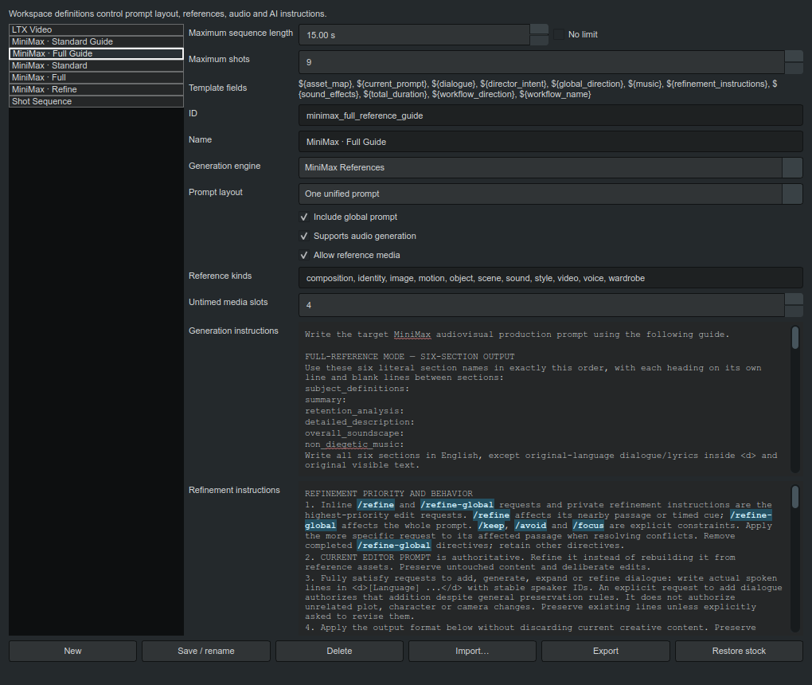
Reuse the direction you like
Templates can include the supported fields listed in the editor, such as Director’s Intent, the current prompt, ordered plan and total duration. Use these fields to blend project context with your preferred camera, continuity or writing rules.
Choose Save / rename to keep the definition, Export to share or reuse it, and Import to load a definition JSON. An import with a matching ID replaces that local definition. Restore stock brings back the included definitions while preserving custom definitions with other IDs. Delete removes the selected definition.
Native projects carry their workspace identity and a portable definition. Opening a project can install its definition when it is missing locally; an existing local definition with the same ID takes precedence. This lets you carry a setup with the project while continuing to manage your local templates.
Continue: Prompt workflows · Application setup · Complete feature guide
The shipped defaults are LTX Video, two guide-based MiniMax templates and two Official Skill variants of Standard / Keyframes and Full Reference. Upgrades replace untouched old MiniMax factory definitions and preserve custom definitions. Unified workspaces share the segment editor and keep a separate production draft below it.
ComfyUI export artwork
The ComfyUI export action uses the official Comfy logo from Comfy-Org/ComfyUI_frontend, used to identify the export destination. Source repository license. The mark identifies ComfyUI; this application is Prompt Director.

The packaged graph is adapted from the user-supplied MiniMax workflow. Its source media names, editor previews and scene prompt are removed; export fills them from the current project.
Start directing with Prompt Director.
Your desktop workspace for AI video planning
Install Prompt Director, open a project and start arranging your sequence. Timeline editing and project organization work locally. Connect Gemini, OpenAI API, or your eligible ChatGPT plan when you want help generating or refining prompts.
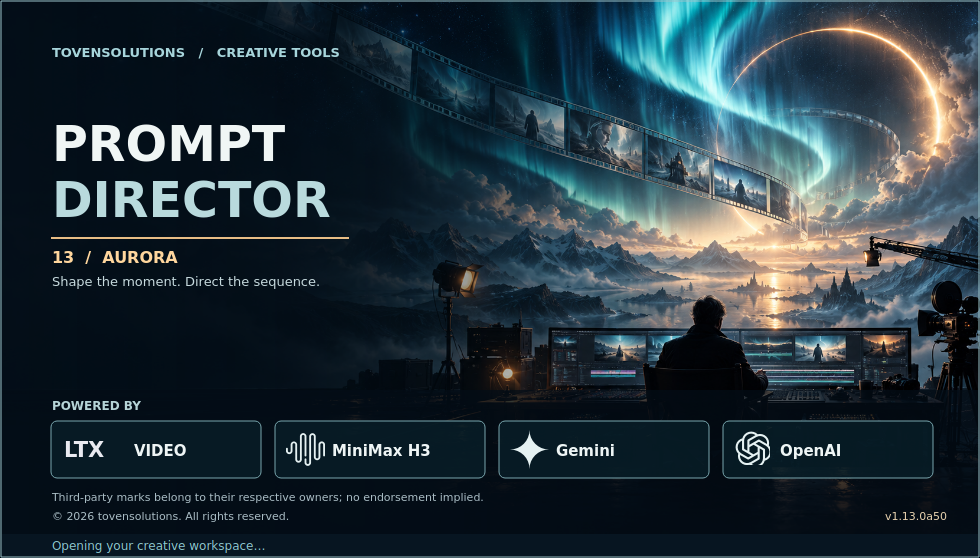
Install the current experimental build
You need Python 3.10 or newer and a desktop environment supported by Qt 6. A virtual environment keeps Director’s dependencies separate from other Python applications.
Linux and macOS
python3 -m venv ~/.venvs/ltx-director
source ~/.venvs/ltx-director/bin/activate
python -m pip install --upgrade pip
python -m pip install --upgrade 'https://raw.githubusercontent.com/etoven/ltx-director-director/experimental/dist/ltx_prompt_director-1.13.0a123-py3-none-any.whl'
prompt-director
Windows PowerShell
py -m venv "$env:USERPROFILE\ltx-director-venv"
& "$env:USERPROFILE\ltx-director-venv\Scripts\Activate.ps1"
python -m pip install --upgrade pip
python -m pip install --upgrade 'https://raw.githubusercontent.com/etoven/ltx-director-director/experimental/dist/ltx_prompt_director-1.13.0a123-py3-none-any.whl'
prompt-director
On first launch, Prompt Director migrates preferences, custom workspaces, projects and managed media from the previous LTX Director folders. Existing files in the new folders take priority, and the original folders are retained.
The package installs Qt components, image handling and the bundled FFmpeg helper. Review-video playback also depends on codec availability on the system.
Connect your prompt-writing provider
Open Settings → Application to choose Gemini, OpenAI, or chatgpt. Gemini and OpenAI API use their existing API keys. For ChatGPT-plan authentication, open the new ChatGPT plan tab, select Continue with ChatGPT, approve plan usage in your browser, then choose a model from your account-specific model catalog. Return to the Application tab to select the chatgpt provider. No API key is required for the ChatGPT-plan route. Set the request timeout, additional retry attempts and cooldown to fit your provider.
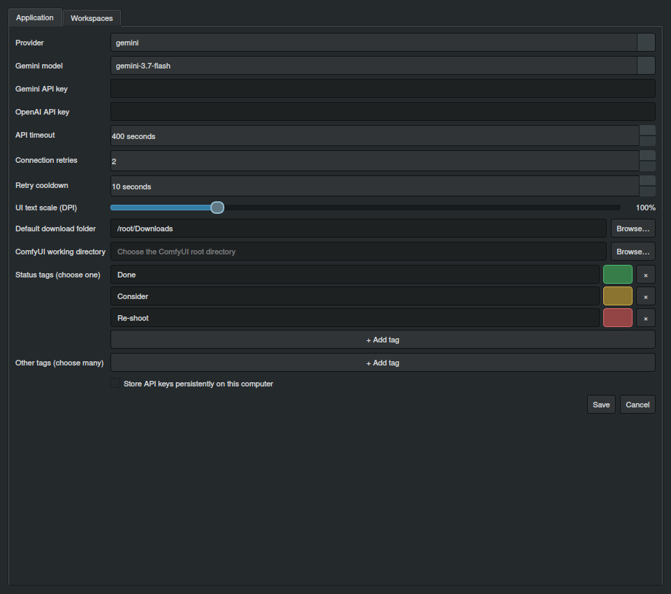
API keys can be retained for the session or stored through the app’s persistent-key option. Use persistent storage on a computer you trust. Keys are excluded from portable project exports. AI requests send the selected project context to the provider; local editing and project storage do not require an AI call.
Set up your working space
Set a default download folder for exports and a ComfyUI working directory for LTX JSON handoff. Customize status tags and other labels. Adjust text scale from 75% to 200%, either here or from the main toolbar. Open Workspaces when you want to customize prompt layouts and master instructions.
On Linux, the first launch installs an application-menu shortcut for the current installation. Refresh it manually with:
prompt-director-install-desktop
Remove that shortcut with prompt-director-uninstall-desktop. Keep the virtual environment in place while its launcher is in use.
Run from source
git clone --branch experimental https://github.com/etoven/ltx-director-director.git
cd ltx-director-director
python3 -m venv .venv
source .venv/bin/activate
python -m pip install --upgrade pip
python -m pip install .
prompt-director
On Windows, use py -m venv .venv and activate .venv\Scripts\Activate.ps1. Use the main branch for the stable line and experimental for Aurora development.
When a desktop dependency needs attention
On Ubuntu or Debian, an error naming a missing XCB component can be resolved with sudo apt install libxcb-cursor0 libxkbcommon-x11-0. If the named missing library is libEGL.so.1, install libegl1.
For inline spelling suggestions, install an Enchant provider and a dictionary for your language. The editors remain usable without a matching dictionary.
If startup reports missing PySide6 modules, activate the environment used to run Director and reinstall the wheel with python -m pip install --force-reinstall followed by the wheel URL above. For a provider error, check the selected model, API key, quota and connection in Settings.
Ready for the first sequence? Open the complete feature and usage guide →
ChatGPT plan OAuth
The ChatGPT-plan provider is for eligible Plus/Pro accounts on locally installed open-source clients. Requests are made to the official Responses API with store=false and stream=true, using a model listed for your authenticated account. The app stores its account tokens in ~/.config/PromptDirector/chatgpt-oauth.json (owner-only permissions on Unix), separate from project exports and QSettings API keys. You can switch accounts, refresh the live model list, sign out, and manage plan usage in ChatGPT Settings. API-key providers are unchanged. The app's workspace prompts, selected timeline references and images are sent to the selected provider when generating AI content; the ChatGPT sign-in itself does not grant access to your conversation history.
ChatGPT-plan usage is subject to your account limits and selected-model eligibility. If authorization or permissions expire, reconnect from the ChatGPT plan tab. Documentation: https://developers.openai.com/siwc/token-sharing-open-source/sign-in
Live generation streaming
Every prompt-generation and refinement action now displays the in-progress model output. Magic Build and segment/global refinements use a two-column generation overlay; MiniMax/Generic unified prompts display a collapsible Live AI Activity panel immediately above the editable prompt. The left column shows only provider-published reasoning summaries when the model provides them; the right column streams generated prompt text. Both columns have an Auto-scroll control. On retries the stream resets to avoid mixing separate attempts. The finished prompt is applied to the editable project only once the provider response passes its normal validation.
Gemini is streamed through streamGenerateContent with includeThoughts when accepted. OpenAI API and ChatGPT OAuth use Responses streaming and request reasoning.summary=auto when supported. Non-thinking models still stream generated text; unsupported summary options automatically fall back to text-only streaming. Private reasoning and cryptographic thought signatures are never displayed.
Structured streaming and completed-draft recovery
The Live AI Activity panel decodes JSON prompt content incrementally into readable field cards rather than showing escaped JSON syntax. Custom SVG icons identify reasoning summaries and generated prompt output. Live generated text is presentation-only until the AI response finishes validation.
A completion is fingerprinted using the same provider and model that originally generated it. This fixes false "inputs changed" rejection when ChatGPT OAuth uses a model different from the Gemini default. Genuine concurrent timeline or editor changes preserve the completed prompt in a reviewable state: choose Use generated result to apply it explicitly or Copy generated to copy it without replacing your edits.
One contextual AI control and live in-editor diff
Each active prompt editor now displays one contextual Generate or Refine split-button. Its dropdown exposes the available operations for that workspace: generate timeline prompts, generate unified prompt, refine unified prompt, refine selected segment, refine global direction and refine timing. There are no duplicate visible refine buttons or regenerate controls. The existing actions and worker paths are reused.
Generated prompt text animates inside the active text box, with newly arriving text tinted red and removed/replaced passages struck through in muted red. Unchanged lines remain visible as anchors. This temporary diff does not enter project state, and the original QTextDocument/undo history is preserved. On completion or error the original editor document is restored before validating/applying the finished response. When a user begins to edit, inline animation suspends immediately, restores the original editor and yields to the user, with the existing result-conflict recovery available if necessary.
Reasoning summaries and provider progress are displayed in a separate AI ACTIVITY Qt dock. The panel can be floated or docked; open it through the primary AI button dropdown. It automatically opens when the selected model publishes a reasoning summary. JSON model output is parsed incrementally so red typing shows decoded prompt prose rather than escape sequences or schema keys. If a model provides no text until completion, the normal validated result application still works.
GPT-6+ combined segment and unified refinement
Existing workspace creative/production prompts stay intact. For supported GPT-6+ OpenAI API-key or ChatGPT-plan models, and supported Gemini Flash text models, the same Generate/Refine action adds an extra JSON segments array to the ordinary unified prompt response. This is automatic and not an extra button. IDs identify existing media so the plan can propose changes in prompt, duration, frame role, order, inserts, or deletions without inventing physical source files. The revised unified prompt and segment plan are validated together before being applied.
MiniMax and Generic workflows now show only the actual unified text editor, not a second segment prompt box. The timeline toolbar contains the one contextual Generate/Refine button, and the segment/global/unified target selector. The button has no dropdown: mark edits anywhere using /refine or /refine-global, then click Refine. Prompt-only refinement workspaces keep that same button in the visible editor header. Red in-editor generated-text animation auto-scrolls while editors and timeline edit controls are locked, so no concurrent-edit conflict warning is needed.
Completed segment JSON records preview proposed timeline operations as they stream; the full validated plan commits atomically. New tiles slide into place and expand to their planned duration. When the model's segment JSON requests artwork, the app discovers its configured image tools automatically and shows a one-time cost approval. For ChatGPT OAuth text models, it prefers the separate Gemini API's gemini-3.1-flash-lite-image (Nano Banana 2 Lite), then a conventional OpenAI API key where available. Other supported Gemini planning models also use Flash Lite Image. The new tile shows a pulsing generation placeholder while the selected paid image API renders. On success the real PNG replaces the placeholder as a start frame; on failure the proposed segment and image prompt remain with a right-click Retry artwork generation entry. If there is no image API key or the user declines the one-time cost approval, the artwork request remains pending. Automatic image generation is limited to four new images per pass; additional requests wait for manual initiation. ChatGPT-plan OAuth alone never has image generation access. Paid Gemini/OpenAI keys are kept separate; approval is remembered per provider until changed in settings.
The AI activity dock continues to show provider-published reasoning summaries, while project identity checks still prevent stale worker output from overwriting a different project.
Single-button slash refinement and automatic image tools (1.13.0a81)
Write /refine or /refine-global in the unified prompt, current segment prompt, director intent, or global direction, and click the only Refine button. In unified modes the model returns both the revised production prompt and the appended segments JSON for automatic timeline diff/application; there are no separate Generate Timeline or segment-operation actions in a dropdown. Gemini Flash text models can provide this JSON too.
If the returned JSON requests frame artwork, the app automatically uses an available supported image backend. Its default ChatGPT OAuth fallback is the separate paid gemini-3.1-flash-lite-image API with a Gemini key; an OpenAI API key is another option. Image generation is not included in ChatGPT subscription OAuth. Before the first paid generation with each provider, a one-time approval warning appears. Both approvals and declines are remembered once per provider; declining leaves the artwork tile pending. Right-click a pending tile to explicitly revisit a declined decision. At most four automatic image requests are submitted in a single refinement.
Director's Intent selector correction (1.13.0a81)
The two-item selector next to the Director's Intent text area chooses the visible editor contents, NOT an AI target or separate generation command. Choose Director's Intent to edit the persistent overall creative intent, or Selected Segment to edit the actual prompt belonging to whichever timeline segment is selected. The selector occupies the same editor position, so there are no additional duplicate prompt boxes. Edits and inline /refine annotations are saved on their corresponding segment; changing timeline selection updates the visible text. Switching back preserves the original creative intent and unified production prompt. The one Generate/Refine button remains in the shared timeline controls; refinements always read /refine annotations from all existing prompts and return a unified production prompt and segment JSON together when supported.